<!doctype html>
<html lang="en">
<head>
  <meta charset="utf-8">
  <meta name="viewport" content="width=device-width, initial-scale=1">
  <title>arxiv digest — 2026-06-23</title>
  <style>
:root {
  --bg: #ffffff;
  --fg: #1f2328;
  --muted: #59636e;
  --border: #d0d7de;
  --card: #f6f8fa;
  --link: #0969da;
}
body {
  max-width: 980px;
  margin: 0 auto;
  padding: 2rem 1rem 5rem;
  font-family: -apple-system, BlinkMacSystemFont, "Segoe UI", Helvetica, Arial, sans-serif;
  line-height: 1.55;
  color: var(--fg);
  background: var(--bg);
}
a { color: var(--link); }
img { max-width: 100%; height: auto; }
pre, code { background: var(--card); border-radius: 6px; }
pre { padding: 1rem; overflow-x: auto; }
blockquote { border-left: 4px solid var(--border); padding-left: 1rem; color: var(--muted); }
details { margin: 0.6rem 0; }
summary { cursor: pointer; font-weight: 600; }
.paper-figures-scroll {
  display: flex;
  gap: 1rem;
  overflow-x: auto;
  overscroll-behavior-x: contain;
  padding: 0.75rem 0.25rem 1rem;
  margin: 1rem 0 1.25rem;
  border-top: 1px solid var(--border);
  border-bottom: 1px solid var(--border);
  scroll-snap-type: x proximity;
}
.paper-figure-card {
  flex: 0 0 min(260px, 72vw);
  scroll-snap-align: start;
  background: var(--card);
  border: 1px solid var(--border);
  border-radius: 12px;
  padding: 0.55rem;
}
.paper-figure-card img {
  display: block;
  width: 100%;
  max-height: 240px;
  object-fit: contain;
  background: white;
  border-radius: 8px;
}
.paper-figure-caption {
  display: block;
  margin-top: 0.5rem;
  color: var(--muted);
  font-size: 0.85rem;
}
.figure-strip-hint {
  color: var(--muted);
  font-size: 0.9rem;
  margin-bottom: -0.3rem;
}
</style>
  <!-- MathJax: renders $...$ inline math and $$...$$ display math, plus
       \(...\) and \[...\]. Loaded from the official CDN; works offline
       once cached. Configured to skip code/pre blocks so arxiv IDs that
       look like dollar amounts don't get mangled. -->
  <script>
    window.MathJax = {
      tex: {
        inlineMath: [['$', '$'], ['\\(', '\\)']],
        displayMath: [['$$', '$$'], ['\\[', '\\]']],
        processEscapes: true,
        processEnvironments: true
      },
      options: {
        skipHtmlTags: ['script', 'noscript', 'style', 'textarea', 'pre', 'code'],
        ignoreHtmlClass: 'tex2jax_ignore',
        processHtmlClass: 'tex2jax_process'
      }
    };
  </script>
  <script id="MathJax-script" async
    src="https://cdn.jsdelivr.net/npm/mathjax@3/es5/tex-chtml.js"></script>
</head>
<body>
<header style="background-color: #333; color: white; padding: 15px; margin-bottom: 20px;">
  <h1 style="margin: 0; font-size: 24px;">
    <a href="https://ochelpan.github.io/arXiv_clean/" style="color: white; text-decoration: none;">Main</a>
  </h1>
</header>

<h1>Daily arXiv Report</h1>

<hr>
<p>
<a href="index.html">← Index</a>
 · <a href="papers_04.html">← Previous</a> · <a href="papers_06.html">Next →</a>
</p>
<hr>

<h2>Papers 81–100</h2>
<p><a id="paper-2606.22133"></a></p>
<h3 id="field-tunable-quadruple-math782math-states-driven-by-momentum-space-frustration"><a href="http://arxiv.org/abs/2606.22133v1">Field-tunable quadruple-$Q$ states driven by momentum-space frustration</a></h3>
<p><strong>Authors:</strong> S. Hayami<br>
<strong>Type:</strong> theory · <strong>Category:</strong> strongly correlated electrons · <strong>PDF:</strong> <a href="https://arxiv.org/pdf/2606.22133v1">https://arxiv.org/pdf/2606.22133v1</a><br>
<strong>Analysis basis:</strong> full PDF text, analyzed in chunks
<strong>Topic relevance:</strong> <code>analog quantum simulation</code> <strong>3/5</strong> · <code>driven-dissipative phase transition</code> <strong>1/5</strong> · <code>entanglement &amp; information structure</code> <strong>1/5</strong> · <code>exotic spin models in light-matter</code> <strong>1/5</strong> · <code>non-equilibrium dynamics</code> <strong>1/5</strong></p>
<div class="figure-strip-hint">↔ Scroll figures horizontally</div>
<div class="paper-figures-scroll">
<figure class="paper-figure-card">
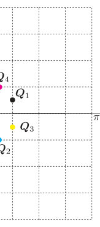
<figcaption class="paper-figure-caption"><b>Fig 1.</b> Figure 1. (Colour online) The four ordering wave vectors 𝑸1–𝑸4 are illustrated in the Brillouin zone. They are generated by applying successive fourfold rotational and/or mirror operations to a representative wave vector.</figcaption>
</figure>
<figure class="paper-figure-card">
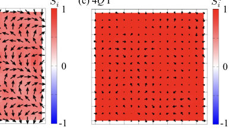
<figcaption class="paper-figure-caption"><b>Fig 2.</b> Figure 3. (Colour online) Representative real-space spin textures obtained by simulated annealing at 𝐾= 0.12 are displayed. Panel (a) shows the double-𝑄I (2𝑄I) state at 𝐻= 0.1, panel (b) corresponds to the single-𝑄(1𝑄) state at 𝐻= 1, and panel (c) represents the quadruple-𝑄I (4𝑄I) state at 𝐻= 1.9. Spin orientations are indicated by arrows, and the color scale represents the out-of-plane component 𝑆𝑧 𝑖.</figcaption>
</figure>
<figure class="paper-figure-card">
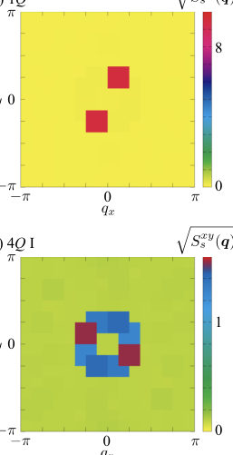
<figcaption class="paper-figure-caption"><b>Fig 3.</b> Figure 5. (Colour online) Momentum-space profiles of the spin structure factor are summarized by plotting √</figcaption>
</figure>
<figure class="paper-figure-card">
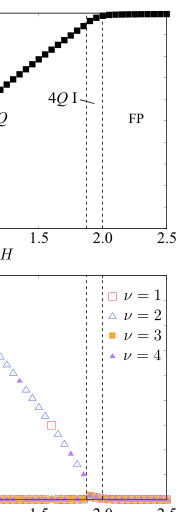
<figcaption class="paper-figure-caption"><b>Fig 4.</b> Figure 6. (Colour online) Magnetic-field evolution of (a) the magnetization and (b) the squared magnetic moments (𝑚𝑸𝜈)2 at 𝐾= 0.12. Vertical dashed lines indicate the phase transition points separating different magnetic states.</figcaption>
</figure>
<figure class="paper-figure-card">
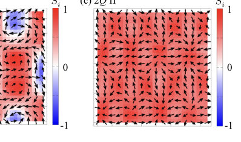
<figcaption class="paper-figure-caption"><b>Fig 5.</b> Figure 7. (Colour online) Representative real-space spin textures obtained by simulated annealing at 𝐾= 0.4 are displayed. Panel (a) shows the quadruple-𝑄II (4𝑄II) state at 𝐻= 0.1, panel (b) corresponds to the quadruple-𝑄III (4𝑄III) state at 𝐻= 0.6, and panel (c) represents the double-𝑄II (2𝑄II) state at 𝐻= 1. Spin orientations are indicated by arrows, and the color scale represents the out-of-plane component 𝑆𝑧 𝑖.</figcaption>
</figure>
</div>

<p><strong>Summary.</strong> This work theoretically explores how itinerant electron magnets can form highly complex quadruple-$Q$ spin crystal states due to momentum-space frustration. By incorporating biquadratic coupling, the authors map out field-dependent phase diagrams showing a rich sequence of transitions between different $Q$-multiplicity phases. The findings establish that higher-order interactions stabilize diverse noncoplanar magnetic textures in centrosymmetric materials.</p>
<p><strong>Why it may be interesting.</strong> While focused on condensed matter magnetism, the study of complex, high-order collective excitations and phase transitions driven by competing interactions provides a rich theoretical framework applicable to understanding many-body dynamics in quantum systems.</p>
<details>
<summary>Detailed structure</summary>
<p><strong>Main problem.</strong> The study investigates the stabilization of complex, higher-order spin crystal phases, specifically quadruple-$Q$ states, in itinerant electron magnets within centrosymmetric settings.</p>
<p><strong>Main result.</strong> Momentum-space frustration combined with biquadratic coupling provides an efficient mechanism to stabilize a rich family of distinct and inequivalent quadruple-$Q$ spin crystals.</p>
<p><strong>Method.</strong> The research employs simulated annealing simulations using the single-spin-flip Metropolis algorithm to map out field-dependent phase diagrams.</p>
<p><strong>Model / system.</strong> The model is an itinerant electron magnet on a square lattice, governed by an effective Hamiltonian incorporating bilinear (RKKY type) and biquadratic spin interactions under an external magnetic field.</p>
<p><strong>Key observables.</strong> Phase diagram ($K-H$ plane), real-space spin textures, scalar spin chirality ($\chi_{sc}$), and momentum-resolved magnetic moment components ($m_{\mathbf{q}}$).</p>
<p><strong>Important parameters / regimes.</strong> Biquadratic coupling strength ($K$), external magnetic field ($H$), and the competition among four symmetry-related ordering wave vectors (momentum-space frustration).</p>
<p><strong>Assumptions / limitations.</strong> The model neglects certain anisotropic interactions, and the study relies on mapping out phase transitions in the weak to strong biquadratic coupling regimes.</p>
<p><strong>Figures summary.</strong> Figures illustrate the four key ordering wave vectors in the Brillouin zone; they show real-space spin textures and scalar spin chirality patterns for various $Q$-states ($4Q_{IV}, 4Q_V$); and they map out phase diagrams showing transitions between $1Q, 2Q,$ and $4Q$ states.</p>
<p><strong>Paper structure.</strong> The paper systematically analyzes the magnetic phase diagram by varying coupling constants ($K$) and external fields ($H$), characterizing the resulting spin crystal phases based on their internal structure (phase locking, amplitude distribution) and transition mechanisms (continuous vs. abrupt).</p>
</details>
<details>
<summary>Abstract</summary>
<p>Multiple-$Q$ magnetism in itinerant electron systems enables complex spin crystals and noncoplanar textures even in centrosymmetric settings. We study a minimal momentum-space spin model on a square lattice with four symmetry-related ordering wave vectors, including bilinear and biquadratic interactions under an out-of-plane magnetic field. Using simulated annealing, we obtain the field-dependent phase diagram and identify successive transitions among single-$Q$, double-$Q$, and multiple inequivalent quadruple-$Q$ states. The quadruple-$Q$ manifold exhibits rich internal structures: the states sharing the same wave vectors differ in phase locking, amplitude distribution, and noncoplanarity, leading to distinct real-space textures and scalar spin chirality patterns. Our results demonstrate that momentum-space frustration and biquadratic coupling provide an efficient route to stabilizing diverse quadruple-$Q$ spin crystals, offering a general framework for higher-order spin textures in centrosymmetric itinerant magnets.</p>
</details>
<p><sub><a href="#top">↑ back to top</a></sub></p>

<p><a id="paper-2606.21999"></a></p>
<h3 id="magneto-ionic-control-of-topological-transport-in-srruo3-via-band-topology-engineering"><a href="http://arxiv.org/abs/2606.21999v1">Magneto-ionic control of topological transport in SrRuO3 via band topology engineering</a></h3>
<p><strong>Authors:</strong> Xuanchi Zhou, Xiaohui Yao, Xiaomei Qiao, Guowei Zhou, Wenjing Huo, Shuang Li, Huihui Ji, Xiaohong Xu<br>
<strong>Type:</strong> experiment · <strong>Category:</strong> strongly correlated electrons · <strong>PDF:</strong> <a href="https://arxiv.org/pdf/2606.21999v1">https://arxiv.org/pdf/2606.21999v1</a><br>
<strong>Analysis basis:</strong> full PDF text, analyzed in chunks
<strong>Topic relevance:</strong> <code>spintronics-quantum-optics interface</code> <strong>3/5</strong> · <code>Kondo &amp; dissipative impurity</code> <strong>1/5</strong> · <code>analog quantum simulation</code> <strong>1/5</strong> · <code>exotic spin models in light-matter</code> <strong>1/5</strong> · <code>non-equilibrium dynamics</code> <strong>1/5</strong></p>
<div class="figure-strip-hint">↔ Scroll figures horizontally</div>
<div class="paper-figures-scroll">
<figure class="paper-figure-card">
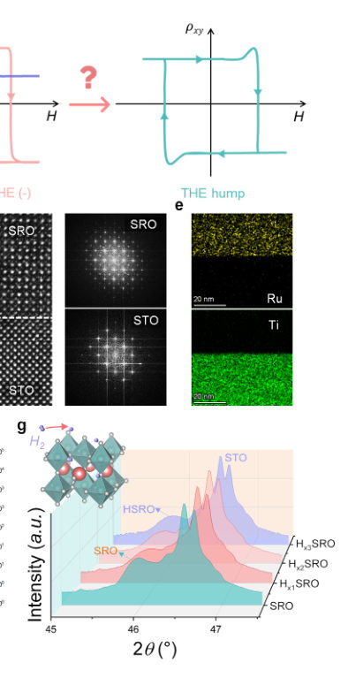
<figcaption class="paper-figure-caption"><b>Fig 1.</b> Figure 1. Hydrogen-driven structural evolution in SrRuO3 system. a, Schematic of the topological band structure of SrRuO3 (SRO) with nodal points. b, Schematic illustration of the controversy over the physical picture of hump-like Hall anomalies in SRO. c, Schematic illustration of the lattice framework of the SRO/SrTiO3 (STO) (001) bilayer. d, Zoom-in images for cross-sectional high-resolution transmission electron microscopy (HRTEM) and respective Fast Fourier Transform (FFT) images for SRO/STO bilayer. e. Ruthenium and titanium elementary distributions for as-grown SRO/STO heterostructure characterized by using energy dispersion spectrum (EDS). f, Reciprocal space mapping (RSM) of SRO...</figcaption>
</figure>
<figure class="paper-figure-card">
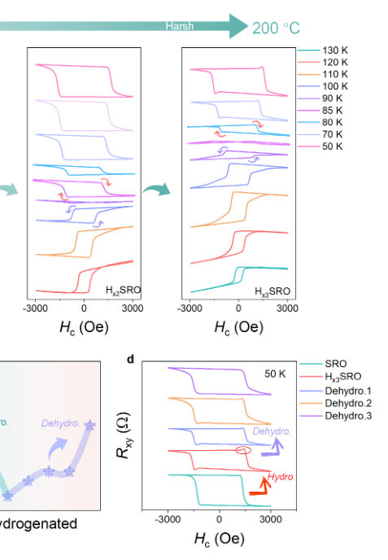
<figcaption class="paper-figure-caption"><b>Fig 2.</b> Figure 2. Manipulating topological transport behaviors through hydrogenation. a, Hydrogenation-mediated regulation on the anomalous Hall effect (AHE) in SRO films. b, Temperature dependence of the anomalous Hall resistivity during the (de)hydrogenated process. c, The reversal temperature (Trev.) of SRO through (de)hydrogenation. d, Emergent hump-like Hall anomalies in the Hall resistance curves of SRO films upon (de)hydrogenation.</figcaption>
</figure>
<figure class="paper-figure-card">
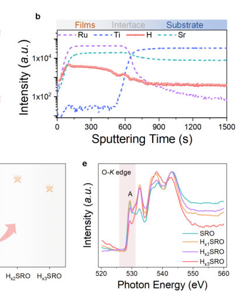
<figcaption class="paper-figure-caption"><b>Fig 3.</b> Figure 3. Berry-curvature-driven topological transports in SRO. a, Schematic of the principle in time-of-flight secondary ion mass spectrometry (ToF-SIMS) and three- dimensional ToF-SIMS element maps for SRO/STO (001) bilayer. b, Depth-profile of the elementary distribution in SRO/STO (001) bilayer. c, RSM spectra for hydrogenated SRO/STO heterostructure (Hx1SRO). d, Evolution of the Berry curvature contribution (B value) in hydrogenated SRO thin films via fitting the AHE scaling relation. e, Soft X-ray absorption spectroscopy (sXAS) for the O K-edge compared for SRO films through hydrogenation.</figcaption>
</figure>
<figure class="paper-figure-card">
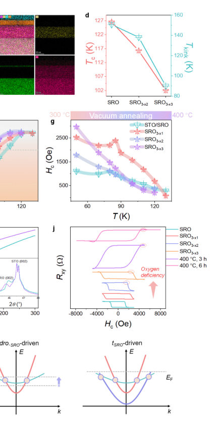
<figcaption class="paper-figure-caption"><b>Fig 4.</b> Figure 4. Defect-engineered magneto-ionic control of topological transport phenomena. a, Schematic illustration of oxygen ionic transport as driven by vacuum annealing and oxygen chemical potential. b, HETEM images of STO/SRO/STO (001) trilayer. c, Ruthenium, titanium and oxygen elementary distributions for as-grown STO/SRO/STO (001) trilayer characterized by using EDS. d, Evolution of the Curie temperature (Tc) and kink temperature (Tkink) of SRO through oxygen deficiency. e, Temperature-dependent AHE in oxygen-deficient SRO (SRO3-x2) films. f-g, Temperature-dependence of f, anomalous Hall resistivity and g, magnetic coercive Field (Hc) for oxygen-deficient SRO films. h,...</figcaption>
</figure>
</div>

<p><strong>Summary.</strong> This work demonstrates that ionic doping provides a powerful, reversible method—magneto-ionic control—to engineer topological transport in $   ext{SrRuO}_3$. By tuning the Fermi level via protonation or oxygen vacancies, researchers can modulate the Anomalous Hall Effect polarity and definitively identify a Topological Hall Effect signature. This establishes a general platform for designing low-power, reconfigurable spintronic devices.</p>
<p><strong>Why it may be interesting.</strong> While focused on condensed matter magnetism/electronics, the concept of using external stimuli (ionic defects) to tune fundamental electronic band structures and resulting quantized responses (like Berry curvature effects) has parallels in controlling quantum states in engineered solid-state systems relevant to AMO physics.</p>
<details>
<summary>Detailed structure</summary>
<p><strong>Main problem.</strong> The central goal is achieving active, reversible control over topological transport phenomena (AHE and THE) in ferromagnets by engineering the band topology.</p>
<p><strong>Main result.</strong> Magneto-ionic control via protonation or oxygen vacancy incorporation allows for tunable reversal of AHE polarity and reveals a switchable hump-like anomaly strongly indicative of a Topological Hall Effect (THE).</p>
<p><strong>Method.</strong> The study uses ionic doping (protonation/oxygen vacancies) to tune the Fermi level relative to avoided band crossings, thereby controlling topological transport signatures.</p>
<p><strong>Model / system.</strong> The system is $ ext{SrRuO}_3$, a perovskite material exhibiting sizable Spin-Orbit Coupling (SOC) and itinerant ferromagnetism. The control mechanism relies on manipulating the electronic structure via ionic defects.</p>
<p><strong>Key observables.</strong> Hall resistance ($ ext{R}_{xy}$ vs. H), resistivity ($
ho$ vs. T), AHE polarity sign reversal temperature ($T_{	ext{rev}}$), and reversible hump-like Hall anomalies.</p>
<p><strong>Important parameters / regimes.</strong> Temperature (e.g., $110 	ext{ K}$ to $83 	ext{ K}$), Hydrogen concentration, Oxygen vacancy concentration, Fermi level shift ($  ext{E}_ ext{F}$).</p>
<p><strong>Assumptions / limitations.</strong> The ionic doping acts as a controllable electron dopant, shifting $  ext{E}_ ext{F}$ and enabling band-filling control over topological responses.</p>
<p><strong>Figures summary.</strong> Figures show temperature-driven sign reversal of AHE polarity ($   ext{R}<em xy>{xy}-    ext{H}$, $
ho</em>$) and the emergence/disappearance of hump-like anomalies upon ionic doping, alongside structural characterization data (XRD, HRTEM).}-    ext{T</p>
<p><strong>Paper structure.</strong> The paper establishes the problem by reviewing AHE/THE in ferromagnets; it then details the magneto-ionic control mechanism using $    ext{SrRuO}_3$ and its defects ($    ext{H}$ or vacancies); key results demonstrate tunable AHE reversal and THE evidence via doping; finally, the work concludes by establishing ionic evolution as a versatile tuning knob for topological transport.</p>
</details>
<details>
<summary>Abstract</summary>
<p>The interplay between spin-orbit coupling (SOC) and nontrivial band topology in ferromagnets gives rise to a rich landscape of topological transport phenomena such as anomalous Hall effect (AHE) and topological Hall effect (THE). One central goal in modern spintronics lies in the realization of the active control over topological transport phenomena in a reversible fashion, while unambiguously disentangling respective contributions of THE and AHE to the net Hall effect remains a formidable challenge. Here we establish magneto ionic control as a powerful paradigm for dynamically engineering topological transports in a 4d-orbital SrRuO3 system with sizable SOC and itinerant ferromagnetism. Harnessing controllable protonation or oxygen vacancy incorporation, the Fermi-level upshift relative to avoided band crossings are realized through band filling control, giving rise to tunable reversal temperature of AHE polarity. Of particular note is the emergence of hump like Hall anomalies through extensive ionic doping that can be reversibly switched, irrespective of AHE polarity, providing evidence for a THE signal driven by broken inversion symmetry rather than a two channel AHE. Our findings provide a viable tuning knob for Berry curvature engineering, enabling on demand control of topological transports in strong SOC ferromagnets for low power, reconfigurable all oxide spintronic devices.</p>
</details>
<p><sub><a href="#top">↑ back to top</a></sub></p>

<p><a id="paper-2606.21731"></a></p>
<h3 id="non-bcs-pairing-by-a-singular-dynamical-interaction"><a href="http://arxiv.org/abs/2606.21731v1">Non-BCS Pairing by a Singular Dynamical Interaction</a></h3>
<p><strong>Authors:</strong> Artem G. Abanov, Andrey V. Chubukov<br>
<strong>Type:</strong> theory · <strong>Category:</strong> strongly correlated electrons · <strong>PDF:</strong> <a href="https://arxiv.org/pdf/2606.21731v1">https://arxiv.org/pdf/2606.21731v1</a><br>
<strong>Analysis basis:</strong> full PDF text, analyzed in chunks
<strong>Topic relevance:</strong> <code>Keldysh / 2PI / non-Gaussian methods</code> <strong>3/5</strong> · <code>Kondo &amp; dissipative impurity</code> <strong>1/5</strong> · <code>analog quantum simulation</code> <strong>1/5</strong> · <code>correlated cavity matter</code> <strong>1/5</strong> · <code>methods for driven-dissipative</code> <strong>1/5</strong></p>
<div class="figure-strip-hint">↔ Scroll figures horizontally</div>
<div class="paper-figures-scroll">
<figure class="paper-figure-card">
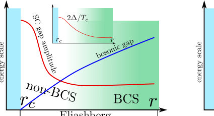
<figcaption class="paper-figure-caption"><b>Fig 1.</b> Figure 1</figcaption>
</figure>
<figure class="paper-figure-card">
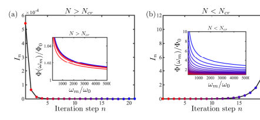
<figcaption class="paper-figure-caption"><b>Fig 2.</b> Figure 2</figcaption>
</figure>
<figure class="paper-figure-card">
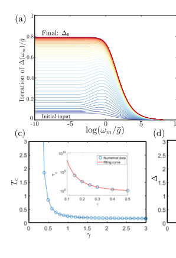
<figcaption class="paper-figure-caption"><b>Fig 3.</b> Figure 3</figcaption>
</figure>
<figure class="paper-figure-card">
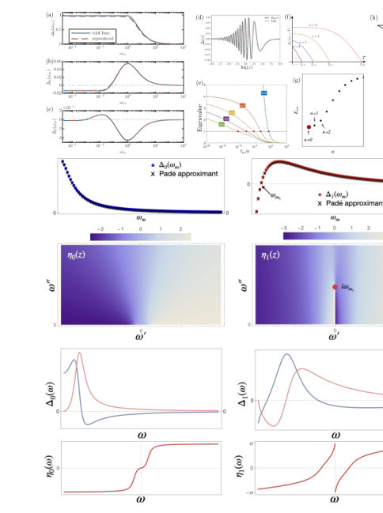
<figcaption class="paper-figure-caption"><b>Fig 4.</b> Figure 4</figcaption>
</figure>
</div>

<p><strong>Summary.</strong> This review analyzes superconductivity in strongly correlated systems where electron interactions are singular, invalidating the assumptions of conventional BCS theory. It demonstrates that such systems support an infinite tower of topologically distinct superconducting solutions to the gap equation. The work provides a powerful theoretical framework for understanding pairing mechanisms near quantum critical points.</p>
<p><strong>Why it may be interesting.</strong> The breakdown of standard mean-field theories due to strong correlations or quantum criticality is a major theme in modern condensed matter theory, directly impacting how pairing mechanisms are understood beyond simple BCS descriptions.</p>
<details>
<summary>Detailed structure</summary>
<p><strong>Main problem.</strong> The review examines superconductivity theory when electron-electron interactions are singular (non-BCS), contrasting this with conventional BCS pairing mechanisms.</p>
<p><strong>Main result.</strong> Singular interactions destroy the Cooper logarithm, leading to a fundamentally different superconducting state characterized by an infinite set of topologically distinct solutions to the gap equation.</p>
<p><strong>Method.</strong> The analysis uses extensions of Eliashberg theory applied to singular power-law interacting models ($\Gamma(\Omega) \propto 1/|\Omega|^\gamma$), employing Renormalization Group (RG) techniques and solving non-linear gap equations.</p>
<p><strong>Model / system.</strong> The focus is on metals near Quantum Critical Points (QCPs), quantum dots, or systems undergoing Mott transitions, modeled using the $\gamma$-model or Yukawa-SYK type interactions.</p>
<p><strong>Key observables.</strong> Superconducting critical temperature ($T_{c,n}$), superconducting gap function ($\Delta(\omega)$), and the topological invariant associated with the gap solutions.</p>
<p><strong>Important parameters / regimes.</strong> The exponent $\gamma$ characterizing interaction singularity, the coupling strength parameter $N$, and the energy scale $\Lambda 	o 0$.</p>
<p><strong>Assumptions / limitations.</strong> The analysis relies on treating interactions as singular power laws in the limit of vanishing characteristic energy scales ($\Lambda 	o 0$), extending beyond standard Eliashberg approximations.</p>
<p><strong>Figures summary.</strong> Figures illustrate the evolution of superconductivity behavior across regimes (FL to non-FL), showing the existence and properties of multiple, topologically distinct gap solutions ($\Delta_n(\omega)$) for different interaction strengths ($N$).</p>
<p><strong>Paper structure.</strong> The paper progresses by first establishing the failure of BCS theory in singular limits, then developing the $\gamma$-model framework, analyzing the resulting non-linear gap equation, and finally characterizing the infinite tower of solutions based on topological invariants.</p>
</details>
<details>
<summary>Abstract</summary>
<p>This review examines the theory of superconductivity in systems with {\em singular dynamical} electron-electron interaction and contrasts it with a conventional BCS superconductivity. Examples include metals near a Quantum Critical Point, quantum dots and system near a localization (Mott) transition. We show, that the singular interaction destroys the traditional separation of energy scales, invalidating the significance of Cooper logarithm, and, as the consequence, the whole BCS framework. We explore the universal model with dynamical interaction $Γ(Ω) \propto 1/|Ω|^γ$ (the $γ$-model) and analyze the competition/interplay between the tendency towards pairing and towards non-Fermi liquid behavior. We show that superconductivity still develops once the pairing interaction exceeds a certain threshold, but the origin of the pairing is qualitatively different from that in BCS theory. We show that the gap equation at $T=0$ has an infinite set of topologically distinct solutions. These solution disappear one by one once the pairing interaction becomes non-singular (massive). We review the physics underlying these phenomena and outline future directions.</p>
</details>
<p><sub><a href="#top">↑ back to top</a></sub></p>

<p><a id="paper-2606.22268"></a></p>
<h3 id="evolution-of-anisotropic-magnetostriction-in-lamn1-xcoxo3-x-01-09"><a href="http://arxiv.org/abs/2606.22268v1">Evolution of anisotropic magnetostriction in LaMn1-xCoxO3 (x= 0.1-0.9)</a></h3>
<p><strong>Authors:</strong> M. Manikandan, R. Mahendiran<br>
<strong>Type:</strong> experiment · <strong>Category:</strong> strongly correlated electrons · <strong>PDF:</strong> <a href="https://arxiv.org/pdf/2606.22268v1">https://arxiv.org/pdf/2606.22268v1</a><br>
<strong>Analysis basis:</strong> full PDF text, analyzed in chunks
<strong>Topic relevance:</strong> <code>exotic spin models in light-matter</code> <strong>3/5</strong> · <code>spintronics-quantum-optics interface</code> <strong>3/5</strong></p>
<div class="figure-strip-hint">↔ Scroll figures horizontally</div>
<div class="paper-figures-scroll">
<figure class="paper-figure-card">
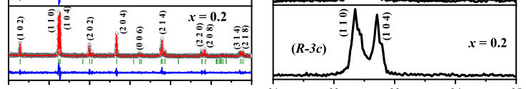
<figcaption class="paper-figure-caption"><b>Fig 1.</b> Fig. 1. (a) Room-temperature powder X-ray diffraction patterns and corresponding Rietveld</figcaption>
</figure>
<figure class="paper-figure-card">

<figcaption class="paper-figure-caption"><b>Fig 2.</b> Fig. 2. (a) Temperature dependence of magnetization (M) under a magnetic field of H = 1 kOe</figcaption>
</figure>
<figure class="paper-figure-card">
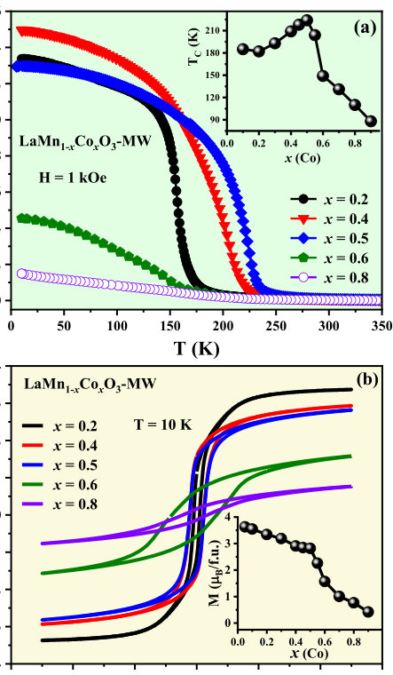
<figcaption class="paper-figure-caption"><b>Fig 3.</b> Figure 2(a) shows the temperature dependence of magnetization (M) of LaMn1-xCoxO3</figcaption>
</figure>
</div>

<p><strong>Summary.</strong> This work experimentally maps the evolution of anisotropic magnetostriction in $   ext{LaMn}_{1-x} ext{Co}_x   ext{O}_3$ as a function of Co doping. The maximum magnetostriction at $x=0.5$ is linked to favorable magnetic coupling involving $  ext{Co}^{2+}$ ions, while the subsequent decrease highlights how valence state changes and competing magnetic interactions govern the material's magnetoelastic response.</p>
<p><strong>Why it may be interesting.</strong> The strong magnetoelastic coupling observed here provides a direct experimental probe into orbital moment physics and charge ordering phenomena within strongly correlated manganites, which is relevant to understanding emergent quantum ground states in doped oxides.</p>
<details>
<summary>Detailed structure</summary>
<p><strong>Main problem.</strong> The study investigates how the anisotropic magnetostriction evolves across a compositional range in $ ext{LaMn}_{1-x} ext{Co}_x   ext{O}_3$ perovskites.</p>
<p><strong>Main result.</strong> Anisotropic magnetostriction ($\lambda_t$) peaks at $x=0.5$, attributed to the coupling involving high-spin $  ext{Co}^{2+}$ ions, and then decreases as Co doping increases due to changes in valence states and magnetic interactions.</p>
<p><strong>Method.</strong> The research combines synthesis via microwave irradiation with comprehensive characterization using XRD for structure and magnetometry/dilatometry for magnetic and magnetostrictive properties.</p>
<p><strong>Model / system.</strong> The physical system is the $    ext{LaMn}_{1-x} ext{Co}_x   ext{O}_3$ perovskite manganite, where magnetism and lattice distortion are intrinsically linked through charge transfer and orbital moment coupling between Mn and Co ions.</p>
<p><strong>Key observables.</strong> Anisotropic magnetostriction ($\lambda_t$), volume magnetostriction ($\lambda_\omega$), saturation magnetization ($M_s$), and structural phases (e.g., rhombohedral, monoclinic).</p>
<p><strong>Important parameters / regimes.</strong> Co doping concentration ($x=0.1-0.9$), temperature ($T=10 	ext{ K}$), and applied magnetic field ($H=50 	ext{ kOe}$).</p>
<p><strong>Assumptions / limitations.</strong> The large magnetostriction is dominated by anisotropic lattice distortion ($\lambda_t \gg \lambda_\omega$), which is linked to the orbital moment of $  ext{Co}^{2+}$ ions.</p>
<p><strong>Figures summary.</strong> Figures show XRD patterns detailing structural evolution across $x$, and magnetization/magnetostriction measurements illustrating how these properties change with applied field and composition, peaking at $x=0.5$.</p>
<p><strong>Paper structure.</strong> The paper systematically measures magnetostriction ($\lambda_{par}, \lambda_{per}$) for various compositions ($x$), correlates the results with structural phase transitions (XRD), and interprets the trends based on changes in valence states ($   ext{Co}^{2+}$ vs $  ext{Co}^{3+}$) and magnetic coupling mechanisms.</p>
</details>
<details>
<summary>Abstract</summary>
<p>Polycrystalline samples of LaMn1-xCoxO3 series over a wide compositional range (x = 0.1 - 0.9) were synthesized by microwave irradiation of oxide precursors and their magnetic and magnetostrictive properties were investigated. Magnetostrictions parallel (l_par) and perpendicular (l_per) to the applied magnetic field were measured to estimate anisotropic(l_anis) and volume magnetostrictions(l_vol). In all the compositions, l-par (l_per) is negative (positive) and (l_anis) &gt;&gt; (l_vol), suggesting dominance of anisotropic lattice distortion under a magnetic field. The value of l_anis at 10 K for H = 50 kOe initially increases with x from 178 ppm for x = 0.1 to a maximum of 1221 ppm at x = 0.5 before decreasing for higher x. The composition dependence of magnetostriction is asymmetric about x = 0.5, the decrease for x &gt; 0.5 is more steeper than for x &lt; 0.5 whereas saturation magnetization decreases monotonically with increasing x except for an abrupt change at x = 0.6. The largest anisotropic magnetostriction observed for x = 0.5 is attributed to the presence of high-spin Co2+ ions with a non-zero orbital moment in the maximum fraction whereas Mn3+/4+ or Co3+ ions play minor roles. The composition dependence of magnetostriction is suggested to arise from changes in the structure, valence states of Mn and Co ions and magnetic interactions among them.</p>
</details>
<p><sub><a href="#top">↑ back to top</a></sub></p>

<p><a id="paper-2606.23582"></a></p>
<h3 id="influence-of-harris-disorder-on-quantum-critical-superconductivity"><a href="http://arxiv.org/abs/2606.23582v1">Influence of Harris disorder on quantum-critical superconductivity</a></h3>
<p><strong>Authors:</strong> Serhii Kryhin, Peter Lunts, Aavishkar A. Patel, Subir Sachdev, Pavel A. Nosov<br>
<strong>Type:</strong> theory · <strong>Category:</strong> strongly correlated electrons · <strong>PDF:</strong> <a href="https://arxiv.org/pdf/2606.23582v1">https://arxiv.org/pdf/2606.23582v1</a><br>
<strong>Analysis basis:</strong> full PDF text, analyzed in chunks
<strong>Topic relevance:</strong> <code>Keldysh / 2PI / non-Gaussian methods</code> <strong>3/5</strong> · <code>correlated / nonlocal dissipation</code> <strong>1/5</strong> · <code>driven-dissipative phase transition</code> <strong>1/5</strong> · <code>methods for driven-dissipative</code> <strong>1/5</strong></p>
<div class="figure-strip-hint">↔ Scroll figures horizontally</div>
<div class="paper-figures-scroll">
<figure class="paper-figure-card">
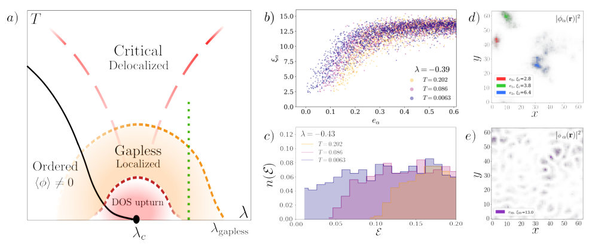
<figcaption class="paper-figure-caption"><b>Fig 1.</b> FIG. 1: The properties of the effective bosonic theory of the normal state are displayed. (a) A schematic phase space diagram of the quantum phase transition with Harris disorder is inferred from our numerical results and Ref. [55]. The vicinity of the quantum critical point is characterized through the behavior of the boson eigenmode DOS n(E), defined in Eq. (2.6). At small temperatures and large λ the system is in a disordered paramagnetic state, and the bosonic states are generally gapped, i.e. n(E ≈0) ≈0. As λ is lowered, the system approaches a QCP at λc. Before the critical point is reached, the bosons become gapless at λgapless &gt; λc in the sense of n(E ≈0) = n &gt; 0. In the immediate...</figcaption>
</figure>
<figure class="paper-figure-card">
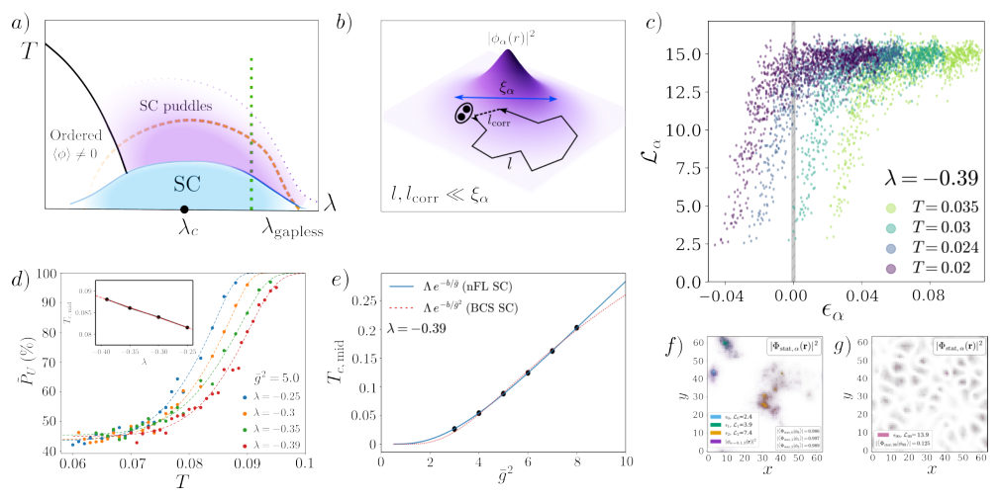
<figcaption class="paper-figure-caption"><b>Fig 2.</b> FIG. 2: Properties of the superconducting state induced by the overdamped localized bosonic modes described in Sec. II are displayed. (a) The inferred phase diagram of the superconducting state. Above the dome associated with an extended macroscopic pairing instability, the system contains a region dominated by localized superconducting puddles. The width of the superconducting dome and the puddle regime is expected to be of the same order as the width of n(E) ≈n &gt; 0 region shown in Fig. 1. (b) Cartoon of a localized bosonic mode and a diffusive Cooperon loop, illustrating the hierarchy of length scales used to obtain the modified Usadel description. Here l is the electronic mean free path,...</figcaption>
</figure>
<figure class="paper-figure-card">
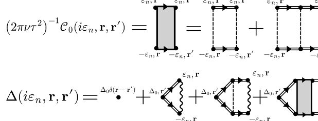
<figcaption class="paper-figure-caption"><b>Fig 3.</b> FIG. 3: The first line is a definition for C0 – a “bare” Cooperon – as diagrammatic series. The dashed line represents a conventional impurity scattering induced by a random chemical potential v(r). The second line is a diagrammatic series definition for pairing vertex ∆. The wavy line denotes the position-dependent bosonic propagator ¯D(iωm, r).</figcaption>
</figure>
<figure class="paper-figure-card">
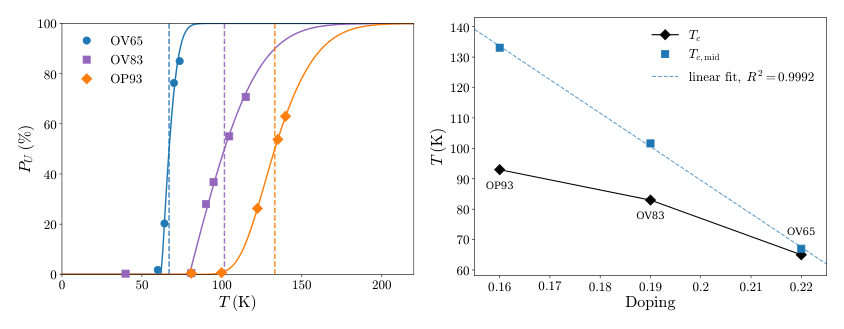
<figcaption class="paper-figure-caption"><b>Fig 4.</b> FIG. 4: Analysis of STM data on Bi2Sr2CaCu2O8+δ from Ref. [84] from the Yazdani group. (a) Data points from Figure 3e of Ref. [84] (reproduced with the corresponding author’s permission). The points measure the percentage of the area (measured with STM) that is ungapped, i.e. in the normal state, versus temperature. The three colors correspond to three different samples at different doping concentrations. The curves are fits to a skew-normal function. (b) Tc,mid (with a linear fit) and Tc extracted from plot (a) versus doping.</figcaption>
</figure>
<figure class="paper-figure-card">
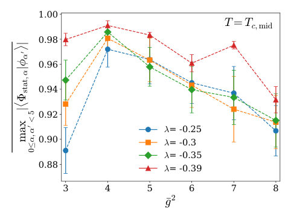
<figcaption class="paper-figure-caption"><b>Fig 5.</b> FIG. 5: Overlap of the most localized superconducting puddles Φstat,α(r) and localized bosons ϕα′(r). This plot demonstrates that for each disorder configuration, among the most localized puddles and most localized bosons there are pairs which essentially sit on top of each other (cf. Fig. 1(d) and Fig. 2(f)). These pairs need not have the same eigenvalue index.</figcaption>
</figure>
</div>

<p><strong>Summary.</strong> This paper develops a theory for superconductivity in quantum-critical metals affected by random disorder (Harris disorder). It shows that the pairing is mediated by localized bosonic fluctuations, leading to superconducting puddles characterized by a power-law distribution of local gap scales. This provides a novel theoretical framework explaining observed gap inhomogeneity in unconventional superconductors.</p>
<p><strong>Why it may be interesting.</strong> The mechanism of gap inhomogeneity arising from localized bosonic modes provides a concrete theoretical interpretation for experimental observations in high-Tc cuprates, linking quantum criticality to unconventional superconductivity.</p>
<details>
<summary>Detailed structure</summary>
<p><strong>Main problem.</strong> The study investigates superconductivity (pairing instability) mediated by bosonic fluctuations in a quantum-critical metal subjected to random mass disorder, known as Harris disorder.</p>
<p><strong>Main result.</strong> The theory predicts that the resulting distribution of local pairing scales follows a power-law tail, suggesting broad gap inhomogeneity and superconducting puddles, which contrasts with standard BCS predictions.</p>
<p><strong>Method.</strong> The analysis employs advanced theoretical techniques including solving linearized Usadel equations, self-consistent Born approximation (SCBA), and analyzing random Schrödinger problems for bosonic modes.</p>
<p><strong>Model / system.</strong> The model describes a quantum-critical metal where fermionic excitations couple to fluctuations of a Landau-damped bosonic field ($\phi$). The system is perturbed by both a random chemical potential and the 'Harris disorder' (random mass $\lambda'(r)$).</p>
<p><strong>Key observables.</strong> Superconducting transition temperature ($T_c$), local pairing scales, gap inhomogeneity structure factors ($\langle\delta\Phi_{stat}\delta\Phi_{stat}
angle(q)$), and bosonic eigenmode Density of States $n(E)$.</p>
<p><strong>Important parameters / regimes.</strong> Disorder strength ($\lambda$, $ar{g}^2$), characteristic length scales ($\xi$, $l_{	ext{corr}}$), and temperature regimes (high vs. low T).</p>
<p><strong>Assumptions / limitations.</strong> The analysis assumes an overdamped but non-conserved order parameter, and relies on approximations like the self-consistent Born approximation for extended solutions.</p>
<p><strong>Figures summary.</strong> Figures illustrate the Boson eigenmode DOS dependence on disorder strength and temperature, and plot $T_c$ vs. coupling/disorder parameters to distinguish between localized puddle regimes and delocalized states.</p>
<p><strong>Paper structure.</strong> The paper builds by first establishing the effective bosonic theory incorporating Harris disorder, then solving the resulting nonlinear random Schrödinger problem for the pairing instability, and finally analyzing different spatial regimes (puddles vs. extended) using SCBA techniques.</p>
</details>
<details>
<summary>Abstract</summary>
<p>In the Hertz theory, a quantum critical metal is described by the coupling of a Fermi surface to fluctuations of a Landau-damped bosonic field $φ$, which may represent either an order parameter or a Higgs field for a transition without symmetry breaking. Scattering from $φ$ produces non-Fermi-liquid behavior in the normal state, while the same fluctuations mediate enhanced Cooper pairing. By the Harris criterion, symmetry-preserving disorder couples most strongly to the coefficient of the $φ^2$ term, locally tuning the system toward or away from criticality. This random mass (``Harris disorder'') leads to a finite density of localized low-energy $φ$ modes even when the fermionic states remain extended and continue to provide Landau damping. We study the onset of pairing mediated by these localized overdamped bosonic modes. Starting from a real-space linearized Usadel equation for the two-particle propagator, we show that the localized bosonic wave functions generate both a spatially random pairing vertex and an effective random potential for Cooper pairs. Numerical solution, a self-consistent Born approximation, and Lifshitz-tail analysis reveal two regimes of the pairing instability. At high temperatures, pairing nucleates compact superconducting puddles on the most localized bosonic modes. At lower temperatures, an extended pairing eigenstate appears, but its transition scale and spatial structure remain strongly affected by mesoscopic correlation effects and enhanced probability of returns to favorable regions of the localized bosonic glue. The resulting distribution of local pairing scales has a power-law tail, in contrast to the stretched-exponential tails of disordered BCS superconductors. This mechanism provides a route to broad gap inhomogeneity and superconducting puddles in quantum-critical metals, and offers an interpretation of STM measurements of the cuprates.</p>
</details>
<p><sub><a href="#top">↑ back to top</a></sub></p>

<p><a id="paper-2606.22257"></a></p>
<h3 id="magnetovolume-effect-in-srru1-xcoxo3-x-00-005"><a href="http://arxiv.org/abs/2606.22257v1">Magnetovolume effect in SrRu1-xCoxO3 (x = 0.0, 0.05)</a></h3>
<p><strong>Authors:</strong> M. Manikandan, R. Mahendiran<br>
<strong>Type:</strong> experiment · <strong>Category:</strong> strongly correlated electrons · <strong>PDF:</strong> <a href="https://arxiv.org/pdf/2606.22257v1">https://arxiv.org/pdf/2606.22257v1</a><br>
<strong>Analysis basis:</strong> full PDF text, analyzed in chunks
<strong>Topic relevance:</strong> <code>exotic spin models in light-matter</code> <strong>3/5</strong> · <code>spintronics-quantum-optics interface</code> <strong>3/5</strong></p>
<div class="figure-strip-hint">↔ Scroll figures horizontally</div>
<div class="paper-figures-scroll">
<figure class="paper-figure-card">
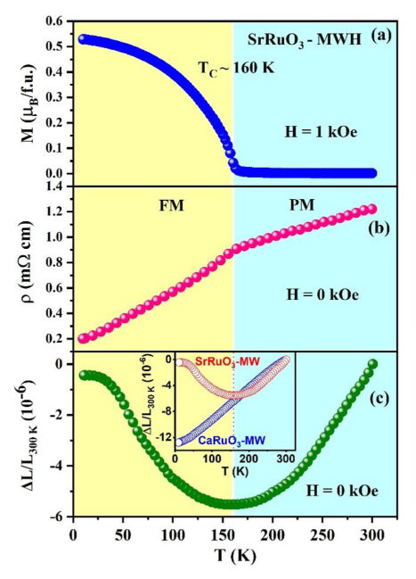
<figcaption class="paper-figure-caption"><b>Fig 1.</b> Fig. 2. Temperature dependence of (a) magnetization (M) under a magnetic field of H = 1 kOe</figcaption>
</figure>
<figure class="paper-figure-card">
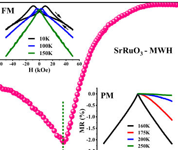
<figcaption class="paper-figure-caption"><b>Fig 2.</b> Fig. 3. Temperature dependence of magnetoresistance of MW-SrRuO3 for H = 50 kOe obtained</figcaption>
</figure>
<figure class="paper-figure-card">
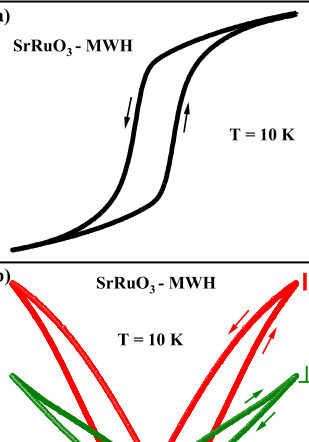
<figcaption class="paper-figure-caption"><b>Fig 3.</b> Fig. 4. Field dependence of (a) magnetization and (b) parallel (λ𝑝𝑎𝑟) and perpendicular (λ𝑝𝑒𝑟)</figcaption>
</figure>
<figure class="paper-figure-card">
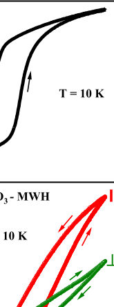
<figcaption class="paper-figure-caption"><b>Fig 4.</b> Fig. 4(b) illustrates the field dependence of parallel (par) and perpendicular (per)</figcaption>
</figure>
<figure class="paper-figure-card">
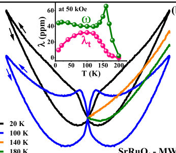
<figcaption class="paper-figure-caption"><b>Fig 5.</b> Fig. 5. Field dependence of (a) parallel (λ𝑝𝑎𝑟) and (b) perpendicular (λ𝑝𝑒𝑟) magnetostrictions</figcaption>
</figure>
</div>

<p><strong>Summary.</strong> The researchers investigated the magnetovolume effect in $ ext{SrRu}_{1-x} ext{Co}_x   ext{O}_3$ perovskites using microwave synthesis. They found that the volume changes are governed by a competition between structural distortions (octahedral tilts) and spin-orbit coupling from Co doping. This work provides detailed experimental insights into magnetoelastic coupling in correlated oxides.</p>
<p><strong>Why it may be interesting.</strong> This work provides experimental evidence linking lattice dynamics (octahedral rotations) directly to magnetic ordering in strongly correlated transition metal oxides, which is a key area for understanding emergent quantum phenomena in condensed matter.</p>
<details>
<summary>Detailed structure</summary>
<p><strong>Main problem.</strong> The study investigates the magnetoelastic properties, specifically the magnetovolume effect and magnetostriction, in $    ext{SrRu}_{1-x} ext{Co}_x   ext{O}_3$ perovskites.</p>
<p><strong>Main result.</strong> The magnetovolume effect is attributed to a competition between octahedral tilting/rotation dynamics and the spin-orbit interaction of the doped $ ext{Co}^{2+}$ ions, which influences magnetic coupling near the Curie temperature ($T_C$).</p>
<p><strong>Method.</strong> Measurements include synthesizing polycrystalline samples via microwave irradiation and characterizing them using magnetometry, resistivity measurements, thermal expansion, and magnetostriction under applied magnetic fields.</p>
<p><strong>Model / system.</strong> The system is the perovskite ruthenate $    ext{SrRu}_{1-x} ext{Co}_x   ext{O}_3$ ($x=0.0, 0.05$), where structural and electronic properties are modulated by Co doping and synthesis method.</p>
<p><strong>Key observables.</strong> Magnetization (M), resistivity ($
ho$), linear thermal expansion ($\Delta l/l_0$), volume magnetostriction ($\omega$), and anisotropy magnetostriction ($\lambda_t$).</p>
<p><strong>Important parameters / regimes.</strong> Curie Temperature ($T_C \approx 160 	ext{ K}$ for $x=0.0$); Magnetostriction values up to $\sim 80 	ext{ ppm}$; Magnetic field strength (e.g., $50 	ext{ kOe}$).</p>
<p><strong>Assumptions / limitations.</strong> The observed magnetovolume effect is linked to structural changes involving the tilting/rotation of $    ext{RuO}_6$ octahedra.</p>
<p><strong>Figures summary.</strong> Figures illustrate XRD patterns confirming orthorhombic structure, and temperature dependence plots showing anomalies in magnetization, resistivity, and thermal expansion near $T_C$.</p>
<p><strong>Paper structure.</strong> The paper first details the synthesis and basic magnetic/resistivity properties of $   ext{SrRuO}_3$ using microwave methods. It then systematically measures magnetostriction ($\lambda_{	ext{par}}, \lambda_{	ext{per}}$) and volume expansion, comparing undoped and Co-doped samples to elucidate the role of doping on magnetoelastic coupling.</p>
</details>
<details>
<summary>Abstract</summary>
<p>Polycrystalline SrRu1-xCoxO3 (x = 0.0, 0.05) and CaRuO3 were rapidly synthesized (&lt; 1 hour) by microwave irradiation of oxide powders, and their magnetic, magnetoresistance, thermal expansion, and magnetostriction properties were investigated. The microwave-synthesised SrRuO3 exhibits a ferromagnetic transition at TC = 160 K, metallic-type resistivity, and negative magnetoresistance, with magnitudes comparable to those of a sample synthesized by conventional heating over 24 hours. Upon lowering the temperature from 300 K, the linear thermal expansion shows a transition from the usual contraction in the paramagnetic state to spontaneous expansion in the ferromagnetic state (invar-like effect). The application of an external magnetic field at a fixed temperature results in isotropic expansion of the length, implying a positive magnetovolume effect. The volume magnetostriction is 40 ppm at 10 K in a magnetic field of 50 kOe, and it reaches a maximum value of 60 ppm close to TC. The spontaneous thermal expansion is diminished in SrRu0.95Co0.05O3. While the magnetostriction is anisotropic at 10 K, the isotropic behaviour is recovered above 80 K, and the maximum value of the positive magnetovolume is comparable to that of the parent compound. Our results suggest that the magnetovolume effect in SrRu1-xCoxO3 is related to competition between robust tilting/rotation of RuO6 octahedra and spin-orbit interaction of the doped Co2+ ions</p>
</details>
<p><sub><a href="#top">↑ back to top</a></sub></p>

<p><a id="paper-2606.22331"></a></p>
<h3 id="no-reference-free-generalization-in-quantum-machine-learning"><a href="http://arxiv.org/abs/2606.22331v1">No Reference-Free Generalization in Quantum Machine Learning</a></h3>
<p><strong>Authors:</strong> Jeongho Bang<br>
<strong>Type:</strong> theory · <strong>Category:</strong> quantum information and computing · <strong>PDF:</strong> <a href="https://arxiv.org/pdf/2606.22331v1">https://arxiv.org/pdf/2606.22331v1</a><br>
<strong>Analysis basis:</strong> full PDF text, analyzed in chunks
<strong>Topic relevance:</strong> <code>quantum measurements</code> <strong>3/5</strong> · <code>measurement-induced transitions</code> <strong>2/5</strong> · <code>Keldysh / 2PI / non-Gaussian methods</code> <strong>1/5</strong></p>
<div class="figure-strip-hint">↔ Scroll figures horizontally</div>
<div class="paper-figures-scroll">
<figure class="paper-figure-card">
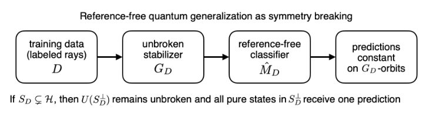
<figcaption class="paper-figure-caption"><b>Fig 1.</b> FIG. 1. Reference-free quantum generalization as symmetry breaking. The training data D orient only the subspace and directions they physically contain. Any unitary symmetry GD left unbroken by the training data must also be left unbroken by a reference-free classifier. If the training span SD is a proper subspace of H, the full unitary group on S⊥ D remains unbroken, forcing all pure off-span test states to receive the same prediction.</figcaption>
</figure>
<figure class="paper-figure-card">
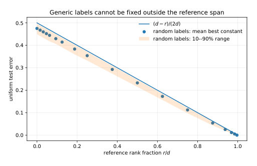
<figcaption class="paper-figure-caption"><b>Fig 2.</b> FIG. 2. Reference-rank barrier for generic labels. For d = 256, a reference-free learner that has oriented only rank r cannot assign independent labels in the remaining d −r dimensional sector. The balanced-label lower bound scales as (d −r)/(2d). Random-label points show the mean best-constant error on the unseen sector, and the shaded region gives the 10–90 percentile range.</figcaption>
</figure>
<figure class="paper-figure-card">
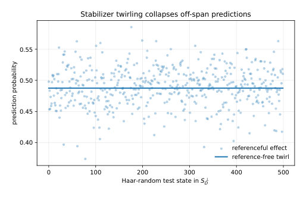
<figcaption class="paper-figure-caption"><b>Fig 3.</b> FIG. 3. Off-span prediction collapse. A referenceful effect can vary over pure states in S⊥ D, but the stabilizer-twirled reference-free effect is scalar on S⊥ D. Thus all pure off-span test states receive exactly the same prediction. The plotted example uses d = 32, r = 8, and 500 Haar-random pure states in the complement.</figcaption>
</figure>
<figure class="paper-figure-card">
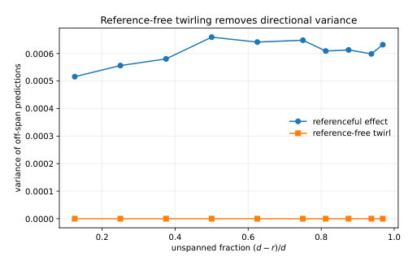
<figcaption class="paper-figure-caption"><b>Fig 4.</b> FIG. 5. Reference-free twirling removes directional variance. For each rank r in a d = 64 dimensional Hilbert space, a random ref- erenceful effect has nonzero prediction variance over states in S⊥ D. Stabilizer twirling removes this variance, because the twirled effect is scalar on the complement.</figcaption>
</figure>
<figure class="paper-figure-card">
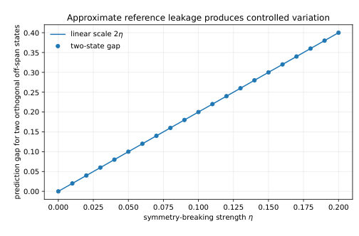
<figcaption class="paper-figure-caption"><b>Fig 5.</b> FIG. 4. Approximate symmetry breaking. A perturbation of strength η inside S⊥ D creates a nonzero prediction gap between two orthogo- nal off-span states, but the gap remains controlled by the symmetry- breaking scale, consistent with Theorem 3.</figcaption>
</figure>
</div>

<p><strong>Summary.</strong> This work establishes a fundamental 'no-go' theorem showing that Quantum Machine Learning cannot generalize to unseen directions in the Hilbert space unless those directions are constrained by an external, specified physical reference structure. The limitation stems from symmetry: if the training data only spans a subspace, all orthogonal states must yield the same prediction.</p>
<p><strong>Why it may be interesting.</strong> It provides a rigorous theoretical limit on what QML can achieve without incorporating explicit physical knowledge (like known Hamiltonians or measurement bases), which is crucial for designing physically meaningful quantum algorithms.</p>
<details>
<summary>Detailed structure</summary>
<p><strong>Main problem.</strong> The paper addresses the fundamental generalization problem in Quantum Machine Learning (QML) when the training data fails to provide an external reference frame or preferred basis.</p>
<p><strong>Main result.</strong> A reference-free learner cannot distinguish between states orthogonal to the span of the training data, forcing all such unseen states to receive the same prediction regardless of their true physical difference.</p>
<p><strong>Method.</strong> The analysis uses symmetry constraints derived from the unitary group acting on the Hilbert space and introduces concepts like the stabilizer group and 'stabilizer twirling' to mathematically prove this collapse.</p>
<p><strong>Model / system.</strong> The model involves quantum systems in a high-dimensional Hilbert space, where learning is framed as finding an optimal Positive Operator-Valued Measure (POVM) classifier based only on labeled training projectors.</p>
<p><strong>Key observables.</strong> Prediction probability $p_D(1|\hat{
ho})$, Directional Variance, and the constant prediction value $\lambda_D$ for off-span states.</p>
<p><strong>Important parameters / regimes.</strong> The rank ($r$) of the spanned subspace relative to the total Hilbert space dimension ($d$), and the degree of symmetry breaking ($\delta_D$).</p>
<p><strong>Assumptions / limitations.</strong> The analysis assumes training data are treated as exact projectors, and it establishes a structural lower bound by ignoring computational limits or specific ansatz choices.</p>
<p><strong>Figures summary.</strong> Figures illustrate the collapse of prediction variance when directional information is removed (stabilizer twirling) compared to referenceful effects, showing constant predictions on the unspanned complement.</p>
<p><strong>Paper structure.</strong> The paper builds a no-go theorem by first defining the reference-free learning constraint (covariance invariance), then proving that this forces the classifier to be invariant under the stabilizer group of the data. Finally, it quantifies the resulting 'off-span blindness' and identifies physical structures as necessary resources for generalization.</p>
</details>
<details>
<summary>Abstract</summary>
<p>Quantum machine learning is often motivated by the exponentially large state space of quantum systems, but this promise leaves a basic generalization problem unresolved: how can a learner assign different meanings to unseen quantum directions when the training data provide no preferred basis, measurement frame, or other orienting structure? We address this identifiability problem by formulating supervised learning without an external quantum reference frame, so that predictions cannot depend on an arbitrary choice of Hilbert-space coordinates. This requirement forces the learned classifier to preserve every unitary symmetry left unbroken by the training data. We prove that whenever the training states fail to span the full Hilbert space, all pure states orthogonal to their span must receive the same prediction -- even when those states are mutually orthogonal and perfectly distinguishable once an appropriate measurement is supplied. The limitation is therefore not caused by state discrimination, optimization, or computational power, but by missing reference information. We further establish a robust version under weak symmetry breaking and show that learning generic unstructured concepts on multiqubit systems requires exponentially many independently oriented training directions. Numerical illustrations visualize the resulting prediction collapse and its controlled relaxation. Our results identify feature maps, measurement bases, Hamiltonians, locality, symmetry priors, architectures, and sufficiently diverse training states as operational resources for generalization. The central implication is that Hilbert-space dimension alone is not a learnable feature space: successful QML must specify the physical structure that gives unseen quantum directions semantic meaning.</p>
</details>
<p><sub><a href="#top">↑ back to top</a></sub></p>

<p><a id="paper-2606.23007"></a></p>
<h3 id="spiral-spin-liquid-resilient-to-quantization-in-the-frustrated-honeycomb-antiferromagnet-gdznpo"><a href="http://arxiv.org/abs/2606.23007v1">Spiral spin liquid resilient to quantization in the frustrated honeycomb antiferromagnet GdZnPO</a></h3>
<p><strong>Authors:</strong> Xun Chen, Rui Bian, Yuqian Zhao, Haijun Liao, Weiqiang Yu, Yi Cui, Yuesheng Li<br>
<strong>Type:</strong> both · <strong>Category:</strong> strongly correlated electrons · <strong>PDF:</strong> <a href="https://arxiv.org/pdf/2606.23007v1">https://arxiv.org/pdf/2606.23007v1</a><br>
<strong>Analysis basis:</strong> full PDF text, analyzed in chunks
<strong>Topic relevance:</strong> <code>analog quantum simulation</code> <strong>3/5</strong> · <code>exotic spin models in light-matter</code> <strong>3/5</strong></p>
<div class="figure-strip-hint">↔ Scroll figures horizontally</div>
<div class="paper-figures-scroll">
<figure class="paper-figure-card">
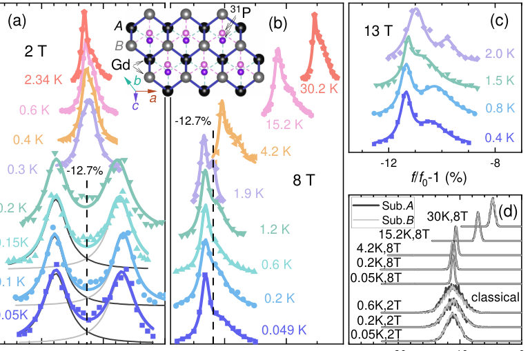
<figcaption class="paper-figure-caption"><b>Fig 1.</b> FIG. 1. NMR spectra of GdZnPO. (a)-(c) Frequency-swept 31P NMR spectra measured at selected temperatures under 2, 8, and 13 T, respectively. The inset between (a) and (b) shows the GdZnPO crystal structure (Zn and O omitted for clarity). Each 31P nucleus probes its three nearest-neighbor Gd3+ spins on either triangular sublattice A or B. In (a), black and gray lines denote the two Lorentzian components fitted below ∼0.25 K. (d) Simulated 31P NMR spectra from sublattices A and B at the classical level. Data are offset vertically for clarity, and the magnetic field is applied along the c axis.</figcaption>
</figure>
<figure class="paper-figure-card">
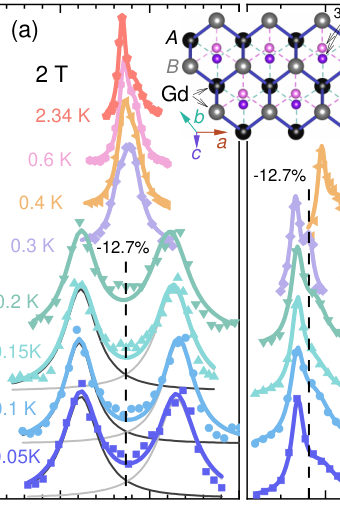
<figcaption class="paper-figure-caption"><b>Fig 2.</b> Figure 1 shows the NMR spectra of the GdZnPO single crystal (sample #1) with the magnetic field applied perpen- dicular to the honeycomb plane, i.e., along the c axis. Despite the high crystalline quality (see Appendix A), the NMR line shape is characteristic and nearly independent of temperature (T) and magnetic field (H) for T ≥0.3 K or µ0H ≥4 T [Figs. 1(a)-1(c)], where the system symmetry remains intact. At 30.2 K (∼2.5|Θcw|), the system lies deep in the param- agnetic regime and retains full lattice symmetry [Fig. 1(b)]. Even in the polarized ferromagnetic phase at 13 T (&gt;µ0H∗), the overall line profile changes little [Fig. 1(c)]. This ro- bustness indicates that the observed...</figcaption>
</figure>
<figure class="paper-figure-card">
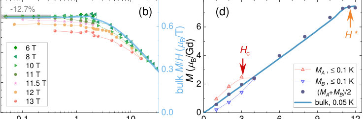
<figcaption class="paper-figure-caption"><b>Fig 3.</b> FIG. 2. NMR shift and magnetization of GdZnPO. (a), (b) Temperature dependence of the NMR shift K(T) measured under selected magnetic fields H. In (a), the crossover temperature Tc ∼0.25 K is indicated for µ0H ≤3 T. In (b), bulk susceptibility M/H is shown for µ0H = 8 T. (c) Correlation between NMR shift K(T,H) and bulk susceptibility M/H(T,H) across the measurement range (0.049-30.2 K, 3-13 T), excluding the region T &lt; Tc and H &lt; Hc where K splits [see (a)]. The black line represents a linear fit K = K0+AhfM/H, yielding K0 = 0.004(2) and Ahf = −0.198(4) T/µB. (d) Field dependence of the NMR shift magnetization (K−K0)H/Ahf, averaged over T ≤0.1 K, compared with the bulk magnetization at...</figcaption>
</figure>
<figure class="paper-figure-card">
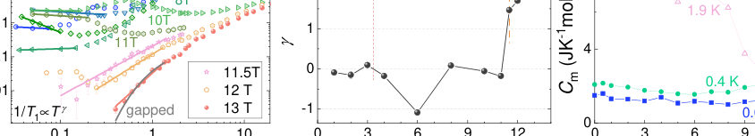
<figcaption class="paper-figure-caption"><b>Fig 4.</b> FIG. 3. Nuclear spin-lattice relaxation rate of GdZnPO. (a), (b) Temperature dependence of the 31P nuclear spin-lattice relaxation rate 1/T1 measured under selected magnetic fields H. In (a), crossover temperatures Tc ∼0.25 K and T ∗∼2 K are indicated for µ0H ≤2 T. In (b), colored lines represent power-law fits 1/T1 ∝T γ, with the fitted exponent γ shown in (d). The gray line corresponds to a fit to the 13 T data using 1/T1 ∝exp(−∆/T), yielding a gap ∆= 2.24(7) K. (c), (d) Field dependence of 1/(T1T) at selected temperatures and the exponent γ. Crossover fields µ0Hc ∼3 T and µ0H∗∼12 T are indicated. (e), (f) Field dependence of bulk susceptibility (dM/dH) and magnetic specific heat (Cm) at...</figcaption>
</figure>
<figure class="paper-figure-card">
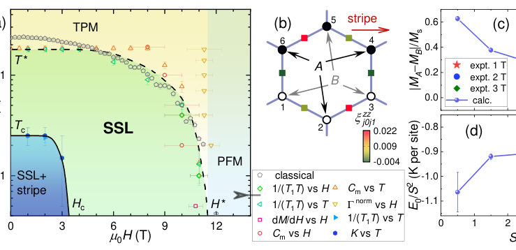
<figcaption class="paper-figure-caption"><b>Fig 5.</b> FIG. 4. Phase diagram of GdZnPO. (a) Magnetic field-temperature (H-T) phase diagram extracted from NMR shift (K), spin-lattice relaxation rate (1/T1), bulk susceptibility (dM/dH), magnetic specific heat (Cm) [8], and normalized Gr¨uneisen ratio Γnorm = (H/T)(dT/dH) [9]. The thermal paramagnetic (TPM) phase occurs where thermal energy (kBT) dominates spin-spin exchange interactions, whereas the polarized ferromagnetic (PFM) phase is the low-temperature state where an external magnetic field overcomes these interactions to align the spins uniformly. (b) Ground-state (|GS⟩) correlations of the central hexagon, ξzz j0j1 = ⟨GS|Sz j0Sz j1|GS⟩/S2, computed for an S = 7/2 72-site cluster (Appendix...</figcaption>
</figure>
</div>

<p><strong>Summary.</strong> This work characterizes the magnetic ground state of GdZnPO, a frustrated honeycomb antiferromagnet, by combining NMR measurements with DMRG simulations. The primary finding is that the material robustly exhibits spin-liquid characteristics even when considering the effects of high-spin quantization. This establishes GdZnPO as an important platform for studying quantum magnetism in complex, highly correlated systems.</p>
<p><strong>Why it may be interesting.</strong> The resilience of the spin liquid state against quantization effects ($S=7/2$) is a key topic for understanding how crystal field effects and high spins modify quantum magnetic behavior in real materials, which has implications for designing quantum materials.</p>
<details>
<summary>Detailed structure</summary>
<p><strong>Main problem.</strong> The study investigates the nature of exotic quantum magnetic phases, specifically spin liquids (SSLs), in frustrated antiferromagnets against the influence of high-spin quantization effects.</p>
<p><strong>Main result.</strong> The material GdZnPO exhibits robust evidence for a spin-liquid state down to very low temperatures, suggesting that the finite spin quantum number only weakly modifies the underlying spiral degeneracy rather than destroying the SSL phenomenology.</p>
<p><strong>Method.</strong> The research combines experimental measurements using Nuclear Magnetic Resonance (NMR) spectroscopy with advanced theoretical calculations like Density Matrix Renormalization Group (DMRG).</p>
<p><strong>Model / system.</strong> The physical system is the honeycomb antiferromagnet GdZnPO, modeled by a frustrated Hamiltonian involving exchange interactions ($J_1, J_2$) and single-ion anisotropy. The high spin quantum number is $S=7/2$.</p>
<p><strong>Key observables.</strong> NMR relaxation rate (1/T1), magnetization, specific heat, and correlation parameters ($\xi_{xy}, \xi_{zz}$).</p>
<p><strong>Important parameters / regimes.</strong> Intermediate field regime ($\sim 3$ T to $\sim 12$ T) vs. low fields ($< 3$ T); ultra-low temperatures down to $33$ mK.</p>
<p><strong>Assumptions / limitations.</strong> The analysis assumes that the observed spin dynamics and scaling relations provide intrinsic information about the magnetic ground state, despite potential extrinsic broadening from sample disorder.</p>
<p><strong>Figures summary.</strong> Figures illustrate NMR spectra across various fields/temperatures, phase diagrams mapping different magnetic regimes (SSL vs. Stripe), and plots showing temperature dependence of relaxation rates ($1/T_1$) used to determine critical exponents ($\gamma$).</p>
<p><strong>Paper structure.</strong> The paper progresses by first establishing the general model and experimental setup using NMR on GdZnPO; it then analyzes data across different field regimes, distinguishing between weak stripe order at low fields and robust SSL behavior in intermediate fields; finally, theoretical calculations (DMRG) are used to complement these findings by simulating ground-state correlations.</p>
</details>
<details>
<summary>Abstract</summary>
<p>Frustrated magnets host strong quantum fluctuations that can suppress conventional magnetic order and give rise to exotic quantum phases such as spin liquids. In some cases, however, quantum fluctuations lift classical degeneracies and stabilize ordered states via an order-by-quantum-disorder mechanism. The spin-7/2 honeycomb antiferromagnet GdZnPO has recently been proposed as a spiral spin-liquid candidate arising from cooperative fluctuations among a subextensively degenerate manifold of spiral states. Here, we investigate the local magnetization and spin dynamics in GdZnPO using nuclear magnetic resonance. In an intermediate field regime between $\sim$3 T and the saturation field ($\sim$12 T), we observe a spatially uniform magnetization and persistent low-energy spin dynamics down to 0.033 K, with no detectable symmetry breaking, providing spectroscopic evidence for a spin-liquid state. At lower fields below $\sim$3 T, a weak stripe order emerges below $\sim$0.25 K; however, strong fluctuations persist, as indicated by a nearly temperature-independent and unusually large spin-lattice relaxation rate in the low-temperature limit. Our results demonstrate that spin-7/2 quantization weakly lifts the spiral degeneracy, stabilizing subtle magnetic order while preserving robust dynamics and spin-liquid phenomenology. These findings establish GdZnPO as a promising platform for exploring spin liquids in high-spin frustrated magnets down to the lowest accessible temperatures.</p>
</details>
<p><sub><a href="#top">↑ back to top</a></sub></p>

<p><a id="paper-2606.23544"></a></p>
<h3 id="structure-aware-variance-reduction-for-unbiased-randomized-hamiltonian-simulation"><a href="http://arxiv.org/abs/2606.23544v1">Structure-Aware Variance Reduction for Unbiased Randomized Hamiltonian Simulation</a></h3>
<p><strong>Authors:</strong> Joshua W. Dai, Fredrik Hasselgren, Chusei Kiumi<br>
<strong>Type:</strong> theory · <strong>Category:</strong> numerical methods · <strong>PDF:</strong> <a href="https://arxiv.org/pdf/2606.23544v1">https://arxiv.org/pdf/2606.23544v1</a><br>
<strong>Analysis basis:</strong> full PDF text, analyzed in chunks
<strong>Topic relevance:</strong> <code>methods for driven-dissipative</code> <strong>3/5</strong> · <code>analog quantum simulation</code> <strong>2/5</strong> · <code>non-equilibrium dynamics</code> <strong>1/5</strong></p>
<div class="figure-strip-hint">↔ Scroll figures horizontally</div>
<div class="paper-figures-scroll">
<figure class="paper-figure-card">
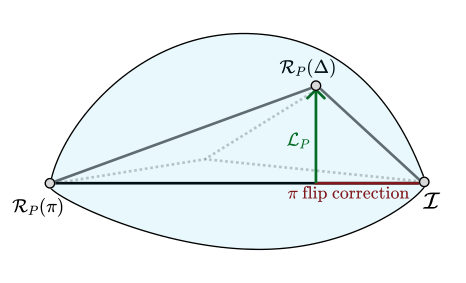
<figcaption class="paper-figure-caption"><b>Fig 1.</b> FIG. 1. Geometric intuition for the local TE-PAI decomposi- tion. For a fixed Pauli string P, the finite channels I, RP (∆), and RP (π) give a linear representation of the infinitesimal direction LP . The ∆-rotation contains both the desired Li- ouvillian component and an unwanted component along the I–RP (π) direction. TE-PAI subtracts this unwanted compo- nent, representing the Liouvillian insertion as a signed com- bination of physical finite-angle channels.</figcaption>
</figure>
<figure class="paper-figure-card">
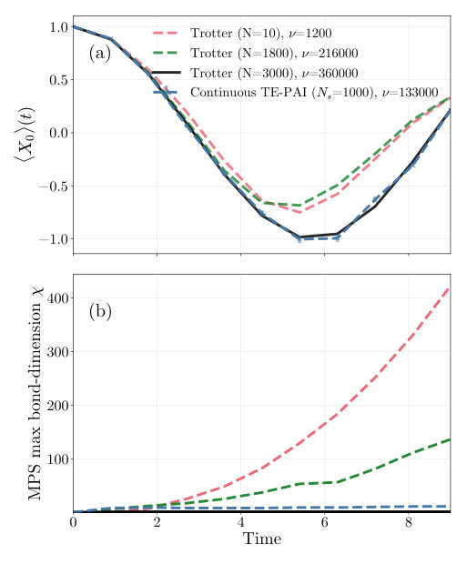
<figcaption class="paper-figure-caption"><b>Fig 2.</b> FIG. 2. Continuous TE-PAI with Ns = 1000 circuits and ∆= π/210 simulates an n = 30 qubit spin-chain Hamil- tonian with high-frequency time-dependent nearest-neighbor coupling, compared against first-order Trotterization with N = {10, 1800, 3000} on MPS. (a): The expectation value ⟨X0⟩over time for the deepest canon Trotterization in black approximated by continuous TE-PAI in blue, N = 1800 Trot- ter in green, and N = 10 Trotter in red. (b): The maximum bond-dimension used by the simulations as a function of sim- ulation duration. For the continuous TE-PAI circuits, this was the max between all circuits for any given time-step.</figcaption>
</figure>
<figure class="paper-figure-card">
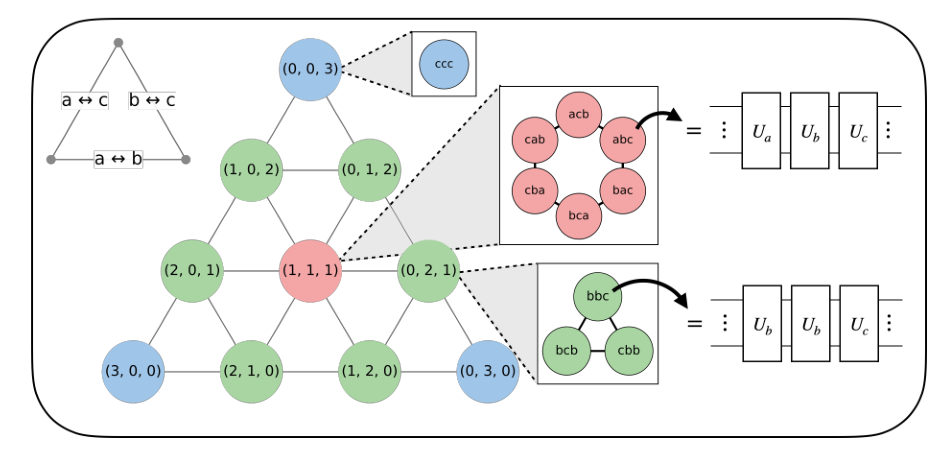
<figcaption class="paper-figure-caption"><b>Fig 3.</b> FIG. 3. Partitioning of the sample space for words of length 3 made from an alphabet A = {a, b, c}. The 33 = 27 words are first grouped by the counts vector into 5 2  = 10 multisets, represented as points on an integer simplex. Edges between simplex points correspond to single-letter substitutions. Each multiset has an internal graph whose nodes are the distinct permutations of that multiset and whose edges are adjacent transpositions. Counts-vector stratification removes variance associated with the outer substitution graph; the residual variance is due to random sampling of orderings on the internal permutation graphs.</figcaption>
</figure>
<figure class="paper-figure-card">
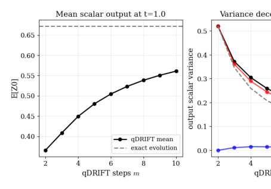
<figcaption class="paper-figure-caption"><b>Fig 4.</b> FIG. 4. A small qDRIFT example on the 2-qubit Hamiltonian H = 1</figcaption>
</figure>
<figure class="paper-figure-card">
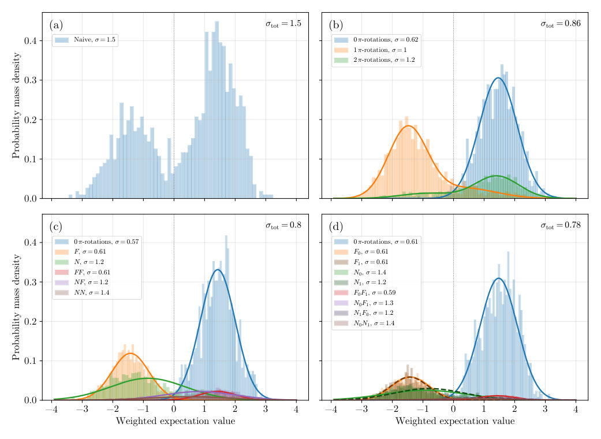
<figcaption class="paper-figure-caption"><b>Fig 5.</b> FIG. 5. Per-circuit distributions of the (weighted) observable estimator w(C) ⟨O⟩C for ⟨X0⟩on a 12-qubit time-dependent spin chain (J = 1, T = 2, ∆= π/128, Ns = 103 samples per stratum), compared across four sampling strategies. Bars show the empirical histogram of each (sub)stratum, scaled by its analytic stratum probability ps, so the panel-wide pointwise sum approximates the mixture density targeted by the corresponding estimator. Solid (and dashed, panel (d)) curves are parametric fits described below. The bold quantity in the top-right of each panel is the resulting per-circuit estimator standard deviation under proportional allocation, σtot = pP</figcaption>
</figure>
</div>

<p><strong>Summary.</strong> The paper introduces structure-aware methods to drastically reduce the sampling overhead in randomized quantum Hamiltonian simulations. It achieves this by developing continuous time-evolution estimators that eliminate systematic Trotterization errors and then applying advanced statistical techniques to decompose and minimize the remaining Monte Carlo variance. This makes simulating complex, large-scale quantum systems significantly more efficient.</p>
<p><strong>Why it may be interesting.</strong> This work provides advanced mathematical tools for simulating complex quantum dynamics by rigorously controlling statistical errors. The development of observable-adapted variance reduction is crucial for making large-scale Hamiltonian simulations feasible beyond current computational limits.</p>
<details>
<summary>Detailed structure</summary>
<p><strong>Main problem.</strong> The paper addresses the fundamental trade-off between systematic bias and sampling overhead when simulating quantum dynamics using randomized Hamiltonian simulation techniques.</p>
<p><strong>Main result.</strong> By developing structure-aware variance reduction techniques, they achieve significant reductions in Monte Carlo sampling cost (up to 96%) while maintaining unbiased estimation of quantum channels.</p>
<p><strong>Method.</strong> The core method involves decomposing the simulation error into classical counting and quantum ordering components, allowing for targeted variance reduction via stratification based on trajectory statistics.</p>
<p><strong>Model / system.</strong> The study focuses on simulating time evolution under a general time-dependent Pauli Hamiltonian, applicable to systems like spin chains. The methods are applied to estimate quantum channels $\mathcal{U}_T$ and expectation values of observables $O$.</p>
<p><strong>Key observables.</strong> Error reduction percentages (e.g., 70%-80%), residual risk ($  ext{R}(S)$), bond dimension growth, and the counts vector/local count statistics.</p>
<p><strong>Important parameters / regimes.</strong> Simulation time $T$, desired accuracy $\epsilon$, Pauli coupling strengths $\|\mathbf{c}\|_1 T$, and local locality radius $\ell$.</p>
<p><strong>Assumptions / limitations.</strong> The analysis often assumes that observable-adapted stratification (conditioning on local counts) can effectively control the residual variance, although global count statistics are noted as being computationally intractable.</p>
<p><strong>Figures summary.</strong> Figures compare expectation values and maximum bond dimensions between continuous TE-PAI circuits and Trotterization for spin chains, showing superior scaling for TE-PAI. Other figures illustrate the partitioning of the sample space based on counts vectors.</p>
<p><strong>Paper structure.</strong> The paper builds from establishing unbiased estimators (Continuous TE-PAI) that eliminate systematic Trotter error, to decomposing the variance into classical and quantum components, and finally developing structure-aware stratification techniques using local count statistics for practical error reduction bounds.</p>
</details>
<details>
<summary>Abstract</summary>
<p>Randomized Hamiltonian simulation methods are often governed by a trade-off between systematic bias and sampling overhead. We study how classical variance-reduction techniques can be applied to such methods without changing their mean channel, and therefore without introducing additional bias. As a motivating unbiased estimator, we formulate continuous time-evolution probabilistic angle interpolation (continuous TE-PAI), a quasiprobabilistic random-circuit protocol whose remaining Monte Carlo error is purely statistical. Continuous TE-PAI removes Trotter discretization error with finite-depth random circuits, whereas deterministic Trotterization does so only in the infinite-depth limit. Further, in tensor-network simulations, we demonstrate that discretization error can cause an unphysical exponential growth in the bond dimension required for Trotterized simulations, whereas comparable-depth continuous TE-PAI circuits avoid this growth. We then show that the variance of randomized product-formula-based estimators admits a canonical decomposition into a classical counting component and a quantum ordering component such that the dominant simulation overhead results from the non-commutative parts of the Hamiltonian dynamics. Motivated by this decomposition, we achieve an $\approx70\%$ error-reduction using the counting-component for small systems whereas our tensor-network simulations of $n=30$ spin-chain dynamics use coarser statistics tailored to the observable and estimator attaining a negligible bias and a reduction of $\approx 80\%$ leading to $\approx91\%$ and $\approx96\%$ sampling-cost reductions, respectively.</p>
</details>
<p><sub><a href="#top">↑ back to top</a></sub></p>

<p><a id="paper-2606.23234"></a></p>
<h3 id="wess-zumino-terms-in-01-sun-superspin-systems"><a href="http://arxiv.org/abs/2606.23234v1">Wess-Zumino terms in 0+1 SU(N) superspin systems</a></h3>
<p><strong>Authors:</strong> J. S. Morales, M. N. Kiselev<br>
<strong>Type:</strong> theory · <strong>Category:</strong> strongly correlated electrons · <strong>PDF:</strong> <a href="https://arxiv.org/pdf/2606.23234v1">https://arxiv.org/pdf/2606.23234v1</a><br>
<strong>Analysis basis:</strong> full PDF text, analyzed in chunks
<strong>Topic relevance:</strong> <code>exotic spin models in light-matter</code> <strong>3/5</strong> · <code>Keldysh / 2PI / non-Gaussian methods</code> <strong>1/5</strong> · <code>analog quantum simulation</code> <strong>1/5</strong> · <code>spintronics-quantum-optics interface</code> <strong>1/5</strong></p>
<div class="figure-strip-hint">↔ Scroll figures horizontally</div>
<div class="paper-figures-scroll">
<figure class="paper-figure-card">
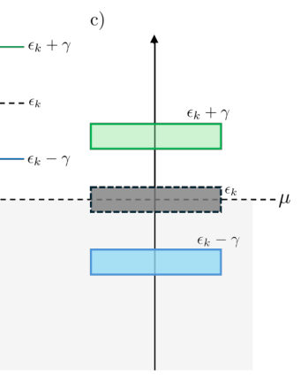
<figcaption class="paper-figure-caption"><b>Fig 1.</b> Figure 1: Possible energy configurations (assuming γ &gt; 0): a) Both spin levels occupied. b) Both unoccupied. c) Upper level unoccupied but lower occupied.</figcaption>
</figure>
<figure class="paper-figure-card">
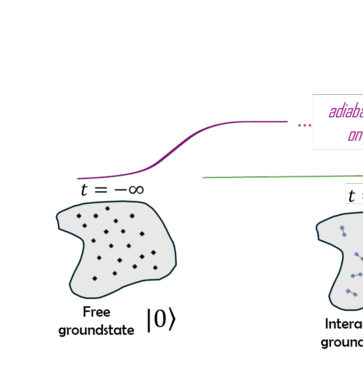
<figcaption class="paper-figure-caption"><b>Fig 2.</b> Figure 2: Adiabatic evolution of instantaneous groundstate.</figcaption>
</figure>
<figure class="paper-figure-card">
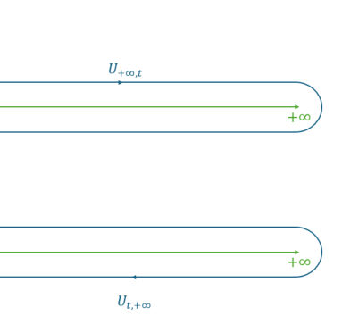
<figcaption class="paper-figure-caption"><b>Fig 3.</b> Figure 3: Forward and backward insertions of the an observable operator ˆO on the closed real-time contour.</figcaption>
</figure>
<figure class="paper-figure-card">
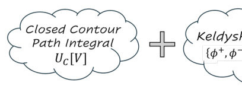
<figcaption class="paper-figure-caption"><b>Fig 4.</b> Figure 4: Schematic structure of the Keldysh technique</figcaption>
</figure>
<figure class="paper-figure-card">
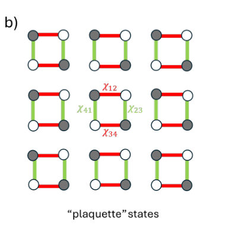
<figcaption class="paper-figure-caption"><b>Fig 5.</b> Figure 5: Groundstate configurations of a N/2 −N/2 SU(N) single color (nc = 1) Heisenberg model. (a) Peierls phase/ Bond states, where χ1 ̸= 0, χ2,3,4 = 0, and Flux phase, where χ1 = χ2,3,4. (b) Alternative degenerate groundstate configurations giving rise to disconnected dimerized plaquettes.</figcaption>
</figure>
</div>

<p><strong>Summary.</strong> This work develops a comprehensive theoretical framework for describing the quantum dynamics of high-symmetry spin systems using Wess-Zumino terms. By generalizing from simple SU(2) spins to complex SU(N) models, it reveals that geometric topology dictates fundamental aspects of the system's effective action in condensed matter contexts.</p>
<p><strong>Why it may be interesting.</strong> The deep connection between topology (Chern classes) and quantum dynamics in spin systems provides a powerful, general framework applicable to understanding exotic magnetic phases and topological order in condensed matter materials.</p>
<details>
<summary>Detailed structure</summary>
<p><strong>Main problem.</strong> To introduce Wess-Zumino (WZ) terms in quantum systems with SU(N) symmetry, focusing on the interplay between geometry, topology, and condensed-matter applications.</p>
<p><strong>Main result.</strong> The geometric reformulation of spin dynamics introduces a non-trivial topological term (the WZ term), generalizing from SU(2) to higher symmetries where the phase space is $\mathbb{CP}^{N-1}$. Explicit local forms are derived for SU(3) and SU(4).</p>
<p><strong>Method.</strong> The analysis uses coherent state path integrals over Lie groups, deriving effective actions by identifying topological terms related to Berry curvature and Chern classes.</p>
<p><strong>Model / system.</strong> The study focuses on $0+1$ dimensional $\text{SU}(N)$ superspin systems. It models spin dynamics using generalized coherent states whose phase space is identified with the complex projective space $\mathbb{CP}^{N-1}$.</p>
<p><strong>Key observables.</strong> WZ term (topological action), Berry curvature, and the resulting effective Lagrangian governing quantum evolution.</p>
<p><strong>Important parameters / regimes.</strong> The symmetry group $SU(N)$ (specifically $N=3, 4$), the dimension of the system ($0+1$ D), and the magnetic field strength $B$.</p>
<p><strong>Assumptions / limitations.</strong> The derivation relies on generalizing concepts from $\text{SU}(2)$ spin coherent states to higher symmetries and assumes the applicability of geometric quantization techniques.</p>
<p><strong>Figures summary.</strong> Not specified (Notes focus on mathematical derivations, equations, and conceptual flow rather than figure descriptions).</p>
<p><strong>Paper structure.</strong> The paper progresses by first establishing the $\text{SU}(2)$ case via the Bloch sphere path integral, then generalizing the geometric origin of topological terms to higher $SU(N)$ symmetries. It concludes with explicit derivations for $\text{SU}(3)$ and $\text{SU}(4)$ superspin systems.</p>
</details>
<details>
<summary>Abstract</summary>
<p>These notes present a self-contained introduction to Wess-Zumino (WZ) terms in quantum systems with $SU(N)$ symmetry, emphasizing the interplay between geometry, topology, and condensed-matter applications. We begin with the $SU(2)$ spin coherent-state path integral, where the Berry phase appears as a WZ term encoding the symplectic structure of the Bloch sphere. This example is then used to introduce the geometric origin of topological terms, their relation to integral cohomology classes, and the role of Berry curvature as the first Chern class of the canonical $U(1)$ bundle. We next discuss physical realizations in which such geometric terms affect dynamics, including adiabatic Berry phases and geometric quantum noise in magnetic quantum dots. A substantial part of the notes is devoted to the condensed-matter motivation for higher $SU(N)$ symmetries, covering $SU(N)$ Heisenberg models, $SU(4)$ spin-orbital and spin-pseudospin systems, multipolar exchange interactions, and higher-spin multipolar orders. Finally, we develop the 0+1-dimensional $SU(N)$ superspin coherent-state construction, identify the phase space with $CP^{N-1}$, and derive explicit local WZ terms for $SU(3)$ and $SU(4)$. The appendices provide algebraic dictionaries connecting the abstract superspin language with concrete physical embeddings, including multipolar generator bases and several useful $SU(4)$ parametrizations.</p>
</details>
<p><sub><a href="#top">↑ back to top</a></sub></p>

<p><a id="paper-2606.22962"></a></p>
<h3 id="adversarial-reinforcement-learning-for-adaptive-eavesdropping-in-bb84-quantum-key-distribution"><a href="http://arxiv.org/abs/2606.22962v1">Adversarial Reinforcement Learning for Adaptive Eavesdropping in BB84 Quantum Key Distribution</a></h3>
<p><strong>Authors:</strong> Ramon Jose C. Bagunu<br>
<strong>Type:</strong> theory · <strong>Category:</strong> quantum information and computing · <strong>PDF:</strong> <a href="https://arxiv.org/pdf/2606.22962v1">https://arxiv.org/pdf/2606.22962v1</a><br>
<strong>Analysis basis:</strong> full PDF text, analyzed in chunks
<strong>Topic relevance:</strong> <code>quantum measurements</code> <strong>3/5</strong> · <code>measurement-induced transitions</code> <strong>1/5</strong> · <code>methods for driven-dissipative</code> <strong>1/5</strong></p>
<div class="figure-strip-hint">↔ Scroll figures horizontally</div>
<div class="paper-figures-scroll">
<figure class="paper-figure-card">
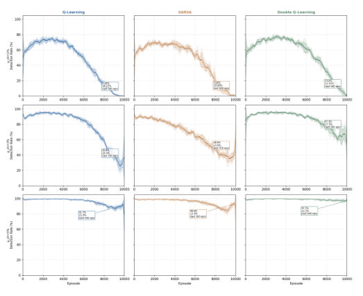
<figcaption class="paper-figure-caption"><b>Fig 1.</b> Fig. 1. Learning curves with shaded ±std bands across 5 seeds. Rows: µch = 1%, 3%, 5%. Columns: Q-Learning, SARSA, Double Q-Learning. Annotations report mean ± std from the final 500 episodes.</figcaption>
</figure>
<figure class="paper-figure-card">
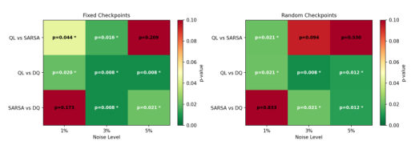
<figcaption class="paper-figure-caption"><b>Fig 2.</b> Fig. 4. Mann-Whitney U test p-values for pairwise agent comparisons (green = significant at α = 0.05). Left: fixed checkpoints. Right: random checkpoints. The pattern of significant and non-significant results is mostly consistent across both conditions, which suggests that the agent ranking is not an artifact of protocol structure.</figcaption>
</figure>
<figure class="paper-figure-card">
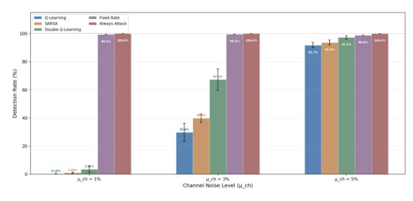
<figcaption class="paper-figure-caption"><b>Fig 3.</b> Fig. 2. Detection rates for all agents and baselines across three noise levels (5-seed mean ± std, error bars on the RL agents, and baselines are deterministic in this metric and shown without error bars). RL agents (left three bars per group) achieve near-zero detection at µch = 1%, while both baselines (right two bars) remain near 100% across all conditions.</figcaption>
</figure>
<figure class="paper-figure-card">
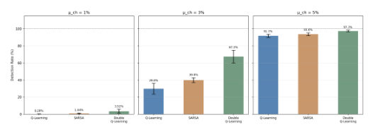
<figcaption class="paper-figure-caption"><b>Fig 4.</b> Fig. 3. Detection rate mean ± std across 5 seeds. The tight variance at µch = 1% confirms that Q-Learning’s near-zero detection is robust across seeds rather than a single-run artifact.</figcaption>
</figure>
<figure class="paper-figure-card">
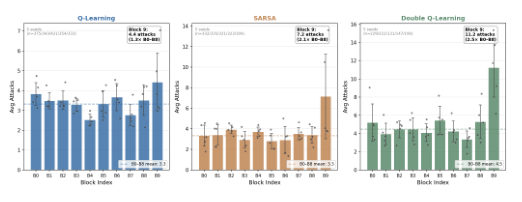
<figcaption class="paper-figure-caption"><b>Fig 5.</b> Fig. 6. Mean attacks per block at µch = 3% (last 500 undetected episodes, full episodes only). Bars show the 5-seed mean with ±std error bars, and the dark scatter points overlay each seed’s mean. The dashed line marks the B0–B8 mean for each agent. Every agent’s block-9 mean exceeds its B0–B8 mean (1.3× for Q-Learning, 2.1× for SARSA, 2.5× for Double Q-Learning), with the surge most consistent across seeds for SARSA and Double Q-Learning.</figcaption>
</figure>
</div>

<p><strong>Summary.</strong> The paper analyzes the security of BB84 QKD against an eavesdropper modeled as a Reinforcement Learning agent capable of adapting its attack strategy based on observed Quantum Bit Error Rate (QBER). The results show that adaptive attackers can achieve near-perfect stealth, drastically lowering detection rates compared to fixed-rate attacks. This mandates that future quantum cryptographic security evaluations must adopt adaptive adversary baselines.</p>
<p><strong>Why it may be interesting.</strong> This work directly impacts quantum cryptography by quantifying how adaptive adversaries can undermine security proofs that rely on static threat models. It suggests that future QKD security evaluations must incorporate feedback mechanisms into adversary modeling.</p>
<details>
<summary>Detailed structure</summary>
<p><strong>Main problem.</strong> To investigate if an adaptive eavesdropper (Eve) can exploit the inherent security margin of BB84 Quantum Key Distribution (QKD) better than fixed attack strategies by observing Quantum Bit Error Rate (QBER) feedback.</p>
<p><strong>Main result.</strong> Adaptive RL agents significantly reduce detection rates compared to non-adaptive baselines, achieving a 355-fold reduction at low noise levels. The study also reveals an 'end-game burst' exploit when checkpoints are fixed.</p>
<p><strong>Method.</strong> The eavesdropping problem is modeled as a Markov Decision Process (MDP), solved using classical Reinforcement Learning algorithms (Q-Learning, SARSA, Double Q-Learning).</p>
<p><strong>Model / system.</strong> The physical system is the BB84 QKD protocol. The model uses an RL agent whose state space incorporates observed QBER feedback and attack count, allowing it to make qubit-by-qubit decisions (intercept or pass).</p>
<p><strong>Key observables.</strong> Detection Rate ($\%$), Quantum Bit Error Rate (QBER), Mean Episode Reward, Information Gain (correct bits per episode).</p>
<p><strong>Important parameters / regimes.</strong> Channel Noise Levels ($\mu_{ch}$): 1%, 3%, and 5%. The RL algorithms used are Q-Learning, SARSA, and Double Q-Learning.</p>
<p><strong>Assumptions / limitations.</strong> The work is a proof of concept using simple classical RL agents in an idealized simulation environment; it ignores realistic hardware imperfections like photon loss or dark counts.</p>
<p><strong>Figures summary.</strong> Figures illustrate learning curves showing detection rate descent over episodes for various agents and noise levels. Other figures detail the emergence and vanishing of the 'end-game burst' attack pattern based on checkpoint randomization.</p>
<p><strong>Paper structure.</strong> The paper establishes the security premise of BB84, models Eve as an RL agent within an MDP framework, compares Q-Learning/SARSA/Double Q-Learning against fixed baselines across varying noise levels, and analyzes temporal vulnerabilities like the end-game burst based on checkpoint structure.</p>
</details>
<details>
<summary>Abstract</summary>
<p>BB84 quantum key distribution derives its security from a physical guarantee that any eavesdropper disturbs the channel in a statistically detectable way. Prior work evaluates this by assuming Eve attacks at a fixed, analytically optimized rate. We examine what happens when Eve is modeled instead as a learning agent. Classical reinforcement learning is used, specifically tabular Q-Learning, SARSA, and Double Q-Learning, to adaptive BB84 eavesdropping. This formulates the attacker's decision as a Markov Decision Process where the agent observes Quantum Bit Error Rate (QBER) feedback and decides, qubit by qubit, whether to intercept or pass. Experiments span three channel noise levels ($μ_{ch}\in\{1\%,3\%,5\%\}$) and are validated across five independent random seeds (45 training runs per condition, 10,000 episodes each). Against the best non-adaptive analytical baseline, Q-Learning reduces detection from $99.4\%$ to $0.28\%\pm0.27\%$ at $μ_{ch}=1\%$ while extracting approximately 10.5 correct bits per episode. This is a 355-fold reduction that is statistically significant ($p=0.020$, Mann-Whitney $U$ test). We also report the spontaneous emergence of an end-game burst, where agents independently learn to surge their attack rate at the final block. This exploit vanishes under randomized checkpoint intervals while stealth performance remains statistically indistinguishable. These results motivate the inclusion of adaptive adversary baselines in quantum cryptographic security evaluations.</p>
</details>
<p><sub><a href="#top">↑ back to top</a></sub></p>

<p><a id="paper-2606.22736"></a></p>
<h3 id="all-optical-implementation-of-generalized-quantum-teleportation"><a href="http://arxiv.org/abs/2606.22736v1">All-optical Implementation of Generalized Quantum Teleportation</a></h3>
<p><strong>Authors:</strong> Takaya Hoshi, Akito Kawasaki, Xiruo Yan, Atsushi Sakaguchi, Takumi Suzuki, Tatsuki Sonoyama, Hironari Nagayoshi, Kosuke Fukui, Kan Takase, Warit Asavanant<br>
<strong>Type:</strong> theory · <strong>Category:</strong> quantum information and computing · <strong>PDF:</strong> <a href="https://arxiv.org/pdf/2606.22736v1">https://arxiv.org/pdf/2606.22736v1</a><br>
<strong>Analysis basis:</strong> full PDF text, analyzed in chunks
<strong>Topic relevance:</strong> <code>quantum measurements</code> <strong>3/5</strong> · <code>measurement-induced transitions</code> <strong>1/5</strong> · <code>methods for driven-dissipative</code> <strong>1/5</strong></p>
<div class="figure-strip-hint">↔ Scroll figures horizontally</div>
<div class="paper-figures-scroll">
<figure class="paper-figure-card">

<figcaption class="paper-figure-caption"><b>Fig 1.</b> Fig. 1. Conceptual framework of single-mode measurement-based quantum computing (MBQC) and comparison of feedforward schemes. (a) Conceptual diagram of single- mode MBQC, where the operational clock cycle is determined by measurement and feedforward. (b) Conventional scheme executing feedforward in the electronic domain, requiring a slow optical-to-electronic-to-optical (O-E-O) conversion. (c) Proposed O-E-O-free architecture featuring all-optical feedforward to achieve high throughput and low latency.</figcaption>
</figure>
<figure class="paper-figure-card">

<figcaption class="paper-figure-caption"><b>Fig 2.</b> Fig. 2. Circuit diagram of generalized quantum teleportation with conventional electronic feedforward. The generalized Bell measurement is implemented using a balanced beam splitter followed by homodyne detections, where &quot;Bell 1&quot; and &quot;Bell 2&quot; denote the quantum states after the beam splitter. The measurement outcomes are processed electronically and used to drive electro-optic modulators (EOMs), which realize displacement operations through highly transmissive beam splitters (𝑇≈1). EPR, Einstein-Podolsky-Rosen; LO, local oscillator.</figcaption>
</figure>
<figure class="paper-figure-card">

<figcaption class="paper-figure-caption"><b>Fig 3.</b> Fig. 3. Overall circuit for all-optical generalized quantum teleportation, highlighting the core all-optical feedforward (AOFF) circuit that integrates all-optical measurement and optical-domain classical signal processing using phase-sensitive amplifiers (PSAs).</figcaption>
</figure>
<figure class="paper-figure-card">

<figcaption class="paper-figure-caption"><b>Fig 4.</b> Fig. 4. Mathematical modeling of the single-stage building block (Fig. 3) incorporating experimental imperfections. The setup parameterizes the non-ideal PSA (gain 𝐺1, internal efficiency 𝜂1, phase 𝜃𝑘), external propagation loss 𝐿1, and feedforward phase rotation 𝜑. It further includes a 50:50 BS and a high-transmittance BS (𝑇∼1) for displacement coupling with mode ˆ𝑎𝐵, yielding the final output noise covariance matrix 𝑉out [Eq. (15)].</figcaption>
</figure>
<figure class="paper-figure-card">

<figcaption class="paper-figure-caption"><b>Fig 5.</b> Fig. 5. Numerical analysis of the additional noise covariance 𝑉out [Eq. (15)] for 𝜂1 = 0.93 and 𝑇= 0.99. (a) Conceptual output decomposition into the target state and accumulated noise. (b) Additional noise power (top; noise variances evaluated independently of gain saturation) and required internal gain 𝐺1𝜂1 = 𝐺/(1−𝐿1) derived from Eq. (11) (bottom) versus external loss 𝐿1 for 0 (solid), −5 (dashed), and −10 dB (dotted) squeezing gates, where red and blue curves indicate noise in the anti-squeezing and squeezing axes, respectively. Vertical lines mark the 30 dB threshold, above which the target operation is physically difficult due to gain deficiency. (c) Phase-space noise ellipses at 𝐿1 =...</figcaption>
</figure>
</div>

<p><strong>Summary.</strong> The paper introduces an All-Optical Feedforward (AOFF) architecture to overcome speed limitations in continuous-variable quantum computing. By replacing slow electronic components with purely optical signal routing using parametric amplifiers, it achieves high-throughput teleportation. This demonstrates a noise-resilient platform crucial for scaling towards fault-tolerant quantum computation.</p>
<p><strong>Why it may be interesting.</strong> This work provides a concrete, hardware-agnostic blueprint for scaling quantum computation by solving the critical interface problem between optical quantum processing and classical electronics, which is central to photonic QI research.</p>
<details>
<summary>Detailed structure</summary>
<p><strong>Main problem.</strong> The primary challenge is overcoming throughput bottlenecks in measurement-based continuous-variable optical quantum computing (MBQC) caused by slow classical electronic feedforward circuits.</p>
<p><strong>Main result.</strong> The proposed All-Optical Feedforward (AOFF) architecture successfully executes generalized quantum teleportation entirely optically, enabling high-throughput operations compatible with fault-tolerant quantum computing requirements.</p>
<p><strong>Method.</strong> The authors developed a theoretical framework to replace O-E-O conversions with purely optical routing using Phase-Sensitive Amplifiers (PSAs) and beam splitters to implement the necessary feedforward displacements.</p>
<p><strong>Model / system.</strong> The system models continuous-variable quantum information processing using Time-Domain Multiplexing (TDM) within a generalized quantum teleportation scheme. The core components involve PSAs, lossy waveguides, and balanced beam splitters operating in the optical domain.</p>
<p><strong>Key observables.</strong> Noise covariance matrix ($\mathbf{V}_{	ext{out}}$), Equivalent Input Noise ($   ext{EIN}$), and operational fidelity relative to theoretical noise floors.</p>
<p><strong>Important parameters / regimes.</strong> PSA gain ($G$), internal efficiency ($\eta$), external loss ($L$), and the required squeezing level for fault-tolerant operations (e.g., $\ge 9.1 	ext{ dB}$).</p>
<p><strong>Assumptions / limitations.</strong> The analysis often relies on the high-gain approximation ($G \gg 1$) for PSA noise suppression, and in some stages, assumes vanishing intrinsic noise from the initial EPR resource state to isolate hardware effects.</p>
<p><strong>Figures summary.</strong> Figures compare conceptual frameworks (conventional vs. AOFF), detail circuit diagrams, and show numerical analyses of output noise power versus external loss ($L_1$), demonstrating noise resilience across different component parameters.</p>
<p><strong>Paper structure.</strong> The paper progresses from identifying the classical bottleneck in MBQC to proposing the AOFF architecture. It then details the mathematical derivation of all-optical feedforward using PSAs, followed by rigorous multi-stage noise analysis (single-stage $  o$ dual-PSA $   o$ PSA-PIA) to prove fault tolerance.</p>
</details>
<details>
<summary>Abstract</summary>
<p>Measurement-based continuous-variable optical quantum computing inherently offers high-speed, large-scale operations, yet its practical performance remains constrained by the processing latencies and throughput bottlenecks imposed by classical electronic feedforward circuits. To overcome these limitations, we propose a loss-tolerant, all-optical feedforward (AOFF) architecture for generalized quantum teleportation capable of executing arbitrary linear operations. Quantitative noise analysis under realistic device parameters demonstrates that the architecture successfully suppresses hardware-induced noise floor, confirming its compatibility with fault-tolerant quantum computing requirements. By eliminating optoelectronic conversions, this scheme enables continuous high-throughput operations that drastically reduce circuit runtime. Ultimately, this approach delivers a noise-resilient platform that reconciles operational versatility with the intrinsic speed and bandwidth of optical quantum information processing.</p>
</details>
<p><sub><a href="#top">↑ back to top</a></sub></p>

<p><a id="paper-2606.23185"></a></p>
<h3 id="entropic-uncertainty-relations-for-mutually-unbiased-operator-frames"><a href="http://arxiv.org/abs/2606.23185v1">Entropic Uncertainty Relations for Mutually Unbiased Operator Frames</a></h3>
<p><strong>Authors:</strong> Jesni Shamsul Shaari, Stefano Mancini<br>
<strong>Type:</strong> theory · <strong>Category:</strong> other · <strong>PDF:</strong> <a href="https://arxiv.org/pdf/2606.23185v1">https://arxiv.org/pdf/2606.23185v1</a><br>
<strong>Analysis basis:</strong> full PDF text, analyzed in chunks
<strong>Topic relevance:</strong> <code>entanglement &amp; information structure</code> <strong>3/5</strong> · <code>Keldysh / 2PI / non-Gaussian methods</code> <strong>1/5</strong> · <code>quantum measurements</code> <strong>1/5</strong></p>
<div class="figure-strip-hint">↔ Scroll figures horizontally</div>
<div class="paper-figures-scroll">
<figure class="paper-figure-card">

<figcaption class="paper-figure-caption"><b>Fig 1.</b> Low-resolution page preview, page 2</figcaption>
</figure>
<figure class="paper-figure-card">

<figcaption class="paper-figure-caption"><b>Fig 2.</b> Low-resolution page preview, page 3</figcaption>
</figure>
<figure class="paper-figure-card">

<figcaption class="paper-figure-caption"><b>Fig 3.</b> Low-resolution page preview, page 4</figcaption>
</figure>
<figure class="paper-figure-card">

<figcaption class="paper-figure-caption"><b>Fig 4.</b> Low-resolution page preview, page 5</figcaption>
</figure>
<figure class="paper-figure-card">

<figcaption class="paper-figure-caption"><b>Fig 5.</b> Low-resolution page preview, page 6</figcaption>
</figure>
</div>

<p><strong>Summary.</strong> This paper generalizes entropic uncertainty relations by formulating them within an operator-frame framework in Hilbert-Schmidt space. It derives strong bounds using advanced tools like Riesz-Thorin interpolation, showing that mutual unbiasedness imposes a Fourier structure on the operators. This extends fundamental quantum limits to constrain the coherence properties of quantum observables themselves.</p>
<p><strong>Why it may be interesting.</strong> This work provides a powerful mathematical generalization of uncertainty principles beyond simple probability distributions, applying it directly to the representation theory of quantum observables (operators). This has implications for understanding fundamental limits in continuous-variable quantum information processing.</p>
<details>
<summary>Detailed structure</summary>
<p><strong>Main problem.</strong> The paper develops a general operator-frame formulation for entropic uncertainty relations, extending these bounds from standard measurement outcomes to the structure of operators themselves.</p>
<p><strong>Main result.</strong> It derives stronger Hirschman-Beckner-type entropic uncertainty relations when the underlying operator frames are mutually unbiased, and recovers known results like the Heisenberg uncertainty principle in specific canonical realizations.</p>
<p><strong>Method.</strong> The derivation heavily utilizes functional analysis tools, specifically combining endpoint norm estimates with the Riesz-Thorin interpolation theorem to establish general entropy bounds for coefficient distributions.</p>
<p><strong>Model / system.</strong> The system is modeled using continuous-variable quantum theory on $L^2(\mathbb{R})$, involving operator families like Weyl displacement operators and position/momentum eigenstates, analyzed within the Hilbert-Schmidt space of operators.</p>
<p><strong>Key observables.</strong> Shannon differential entropy ($H$), coefficient distributions $|f|^2$, and the trace overlap kernel $  ext{Tr}[P^\dagger(eta) O(\lambda)]$.</p>
<p><strong>Important parameters / regimes.</strong> The structure is governed by the bilinear form $B(eta, \lambda)$ associated with mutual unbiasedness, which dictates the Fourier transform relationship between coefficient amplitudes.</p>
<p><strong>Assumptions / limitations.</strong> Key assumptions include assuming the overlap kernel is uniformly bounded for interpolation and that the underlying coefficient function space admits a dense regular subspace in $L^1 \cap L^2$.</p>
<p><strong>Paper structure.</strong> The paper progresses from establishing general entropic uncertainty relations using Riesz-Thorin interpolation to identifying the special case of mutually unbiased operator frames, which forces a Fourier structure leading to stronger bounds. It then validates this framework by examining canonical examples like displacement operators and position/momentum eigenstates.</p>
</details>
<details>
<summary>Abstract</summary>
<p>We develop an operator-frame formulation of entropic uncertainty relations in the Hilbert-Schmidt space of operators. For general continuous indexed operator frames, we derive an entropic uncertainty relation for the associated coefficient distributions by combining endpoint norm estimates with Riesz-Thorin interpolation. We then identify a distinguished class of mutually unbiased operator frames, defined through constant-modulus trace overlaps. Under suitable structural conditions, the corresponding coefficient amplitudes are related by a bilinear Fourier transform, leading to a stronger Hirschman-Beckner-type entropic uncertainty relation. As canonical realizations, we consider Weyl displacement operators and Wigner kernels, as well as Cartesian dyadic frames generated by position and momentum eigenstates. These examples recover familiar continuous-variable Fourier dualities while extending entropic uncertainty relations beyond measurement outcomes to operator representations themselves.</p>
</details>
<p><sub><a href="#top">↑ back to top</a></sub></p>

<p><a id="paper-2606.23438"></a></p>
<h3 id="full-field-mode-sorter-for-optical-knots"><a href="http://arxiv.org/abs/2606.23438v1">Full-Field Mode Sorter for Optical Knots</a></h3>
<p><strong>Authors:</strong> Tareq Jaouni, Roohollah Ghobadi, Ebrahim Karimi<br>
<strong>Type:</strong> both · <strong>Category:</strong> other · <strong>PDF:</strong> <a href="https://arxiv.org/pdf/2606.23438v1">https://arxiv.org/pdf/2606.23438v1</a><br>
<strong>Analysis basis:</strong> full PDF text, analyzed in chunks
<strong>Topic relevance:</strong> <code>interference shaping light</code> <strong>3/5</strong> · <code>methods for driven-dissipative</code> <strong>1/5</strong> · <code>quantum optics experiment</code> <strong>1/5</strong></p>
<div class="figure-strip-hint">↔ Scroll figures horizontally</div>
<div class="paper-figures-scroll">
<figure class="paper-figure-card">

<figcaption class="paper-figure-caption"><b>Fig 1.</b> FIG. 1. Experimental concept. (a) We first generate the desired knotted field by encoding the required phase pattern onto an SLM and selecting for the first diffraction order using a 4f imaging system. We then apply the optimized phase masks onto the field at the waist transverse plane. (b) The knot alphabet is used to verify the sorting performance. We show the knotted fields’ intensity profile at its waist plane – |ψ(ρ, ϕ, z = 0)|2 – as well as each knot’s corresponding singular skeleton. All optical knots have the same Gaussian waist envelop parameter of s = 1.0. The shape parameters for each optical knot are (a, b) = (2.0, 2.0) for cinquefoil, (0.9, 0.9) for trefoil, and (0.6, 0.6) for...</figcaption>
</figure>
<figure class="paper-figure-card">

<figcaption class="paper-figure-caption"><b>Fig 2.</b> FIG. 2. Results for sorting knots using two optimized phase elements. In (a)-(b), we demonstrate our sorter’s ability to sort d = 2 knotted optical modes. (a) Optimized phase elements and output field for sorting cinquefoil (C) and Hopf link (H) optical knots. (b) Crosstalk matrices for all possible two-knot combinations in our alphabet. In (c)-(d), we apply our sorting routine on d=3 knots, utilizing our entire knot alphabet. (c) optimized phase elements and output field for sorting the knots (d) crosstalk matrix associated with our sorter.</figcaption>
</figure>
<figure class="paper-figure-card">

<figcaption class="paper-figure-caption"><b>Fig 3.</b> FIG. 3. Results for sorting knots using one optimized phase plane. We demonstrate the sorting performance on two-knot combinations. (a) Optimized phase elements and output field for sorting cinquefoil (C) and Hopf link (H) optical knots. (b) Crosstalk matrices for all possible two-knot combinations in our alphabet.</figcaption>
</figure>
<figure class="paper-figure-card">

<figcaption class="paper-figure-caption"><b>Fig 4.</b> FIG. 4. Impact of rotating the input field. We plot the detection efficiency and modal crosstalk as a function of the rotation angle θ. We consider 50 points over the range θ ∈[0, 2π]. We report how these quantities change when sending (a) cinquefoil (b) Hopf link and (c) trefoil inputs.</figcaption>
</figure>
<figure class="paper-figure-card">

<figcaption class="paper-figure-caption"><b>Fig 5.</b> FIG. 5. Impact of translating the input field on sorting performance. In (a)-(c), we show heatmaps of the detection efficiency and modal crosstalk as a function of (xtrans, ytrans). We report how these change when sending (a) trefoil, (b) Hopf link, and (c) cinquefoil as inputs to the mode sorter.</figcaption>
</figure>
</div>

<p><strong>Summary.</strong> This paper presents a proof-of-principle method for reading out optical knots—topologically complex light fields used as high-dimensional information carriers. By optimizing phase masks using a genetic algorithm, the authors developed a full-field sorter capable of distinguishing multiple knot types with low crosstalk. This work establishes a crucial readout mechanism necessary for implementing secure, high-capacity communication systems based on structured light.</p>
<p><strong>Why it may be interesting.</strong> This work bridges topological physics (knot theory) with applied quantum optics/information. The development of a robust, full-field sorting mechanism for structured light is highly relevant to realizing high-dimensional quantum communication protocols beyond simple polarization encoding.</p>
<details>
<summary>Detailed structure</summary>
<p><strong>Main problem.</strong> The core problem is developing a practical, full-field method to read out (sort) high-dimensional optical information encoded in topologically structured light fields called 'optical knots.' The goal is to achieve low crosstalk when distinguishing between different knot types.</p>
<p><strong>Main result.</strong> The authors demonstrated that using two optimized phase planes significantly improves sorting performance for a three-knot alphabet compared to using only one plane. This provides a viable readout route for knot-based high-dimensional optical communication.</p>
<p><strong>Method.</strong> They employ an optimization strategy, utilizing a Genetic Algorithm (GA) guided by a composite fitness function. This function balances assignment contrast, error penalties related to distinguishability, and the determinant of the output pattern matrix.</p>
<p><strong>Model / system.</strong> The system involves generating optical knots—light fields with linked or knotted phase/polarization singularities—and passing them through optimized phase-only elements (phase masks). The mathematical model describes the transformation using Fourier propagation ($U$) acting on input knot states ($\psi_n$).</p>
<p><strong>Key observables.</strong> Sorting efficiency, crosstalk between different knots (e.g., Hopf link vs. Trefoil), and the overall distinguishability factor derived from the output intensity distributions.</p>
<p><strong>Important parameters / regimes.</strong> The alphabet size ($d$), optimization weights ($\alpha$ for worst-case contrast, $\gamma$ for determinant penalty), and physical perturbations like rotation or aberration strength.</p>
<p><strong>Assumptions / limitations.</strong> The method assumes that the sorting can be achieved by optimizing phase masks based on input field measurements at a specific plane. Performance degrades when inputs deviate significantly from ideal conditions (e.g., due to aberrations).</p>
<p><strong>Figures summary.</strong> Figures illustrate the experimental concept using optimized phase masks for knot sorting, show performance degradation under rotation and translation, and benchmark results against real-world channel imperfections.</p>
<p><strong>Paper structure.</strong> The paper introduces the physical problem of knot readout, details the mathematical model involving Fourier propagation through phase masks, outlines the complex optimization procedure (GA with composite fitness), presents results showing improved performance with multiple planes, and concludes with benchmarking against experimental noise.</p>
</details>
<details>
<summary>Abstract</summary>
<p>Optical knots are topologically structured light fields whose phase or polarization singularities trace linked or knotted trajectories during propagation, making them promising candidates for high-dimensional optical information carriers. Their use in communication or quantum-information protocols, however, requires a practical readout method that can distinguish a chosen knot alphabet with low crosstalk. Here, we demonstrate a proof-of-principle full-field sorter for optical knots using one or two optimized phase-only elements. The sorter maps each input knot to a predefined output region and is optimized directly from the output intensity distributions to enhance correct assignment, suppress crosstalk, and avoid degenerate mappings between distinct knots. We apply the method to an alphabet composed of the Hopf link, trefoil, and cinquefoil optical knots. Two optimized phase planes improve the sorting performance relative to a single plane and enable high distinguishability for the three-knot alphabet. We further benchmark the sorter under common experimental imperfections. These results extend full-field optical mode sorting to topologically structured light and provide a readout route for knot-based high-dimensional optical communication.</p>
</details>
<p><sub><a href="#top">↑ back to top</a></sub></p>

<p><a id="paper-2606.23535"></a></p>
<h3 id="how-stark-units-enter-sic-overlaps"><a href="http://arxiv.org/abs/2606.23535v1">How Stark units enter SIC overlaps</a></h3>
<p><strong>Authors:</strong> Ingemar Bengtsson, Gary McConnell<br>
<strong>Type:</strong> theory · <strong>Category:</strong> quantum information and computing · <strong>PDF:</strong> <a href="https://arxiv.org/pdf/2606.23535v1">https://arxiv.org/pdf/2606.23535v1</a><br>
<strong>Analysis basis:</strong> full PDF text, analyzed in chunks
<strong>Topic relevance:</strong> <code>quantum measurements</code> <strong>3/5</strong> · <code>entanglement &amp; information structure</code> <strong>1/5</strong> · <code>measurement-induced transitions</code> <strong>1/5</strong></p>
<div class="figure-strip-hint">↔ Scroll figures horizontally</div>
<div class="paper-figures-scroll">
<figure class="paper-figure-card">

<figcaption class="paper-figure-caption"><b>Fig 1.</b> Figure 1: A field inclusion diagram including the real quadratic field K, the Hilbert class field H, and the four ray class fields Kd, Kd∞1, Kd∞2, and Kd∞1∞2. The degree hK of the extension from K to H determines the number of unitarily non-equivalent minimal SICs. To go from the real field Kd∞2 to the complex field Kd∞1, as required by the procedures that have been proposed for constructing SICs, we have to flip the sign of √</figcaption>
</figure>
</div>

<p><strong>Summary.</strong> This theoretical paper connects the geometry of quantum measurements (SIC-POVM overlaps) to advanced number theory via Stark units. It argues that these overlap phases must be expressible as specific products of square roots of Stark units derived from ray class fields. This establishes a deep, unexpected link between quantum information and algebraic number theory.</p>
<p><strong>Why it may be interesting.</strong> This work provides a profound mathematical underpinning for quantum information concepts, suggesting that fundamental physical constraints (like those imposed by SICs) are dictated by deep arithmetic laws governing algebraic units.</p>
<details>
<summary>Detailed structure</summary>
<p><strong>Main problem.</strong> The paper investigates the deep mathematical relationship between the overlap units of Symmetric Informationally Complete (SIC) measurements in quantum systems and algebraic units derived from number theory, specifically Stark units.</p>
<p><strong>Main result.</strong> It conjectures that these overlap units are always products of integral powers of square roots of Stark units originating from specific ray class fields attached to the base field's maximal ring of integers.</p>
<p><strong>Method.</strong> The analysis combines advanced algebraic number theory (ray class fields, Stark units) with quantum information theory concepts (SIC-POVMs and the Weyl–Heisenberg group structure).</p>
<p><strong>Model / system.</strong> The physical system is defined by SIC-POVMs in a Hilbert space $\mathbb{C}^d$, whose overlaps are analyzed using tools from algebraic number theory, including ray class fields $K_{d;f}\mathbb{L}$.</p>
<p><strong>Key observables.</strong> Overlap units ($\theta_{j,k}$), Stark units (algebraic units derived from zeta functions), and the dimension $d$ of the Hilbert space.</p>
<p><strong>Important parameters / regimes.</strong> The dimension $d$, which is related to fundamental discriminants $\Delta_0$; various moduli defining ray class fields ($f|f_0$).</p>
<p><strong>Assumptions / limitations.</strong> The work relies heavily on conjectures regarding Stark units and the structure of Galois groups relating these number-theoretic objects to quantum overlaps.</p>
<p><strong>Figures summary.</strong> Figures illustrate field inclusion diagrams, lattice structures for divisors related to moduli $d$, and geometric representations (like 'flower' structures) of subgroups within the Weyl–Heisenberg group.</p>
<p><strong>Paper structure.</strong> The paper progresses by first establishing the connection between SICs and algebraic units. It then uses Galois theory and class field theory to constrain the possible structure of these overlaps, culminating in detailed number-theoretic proofs that link the overlap values precisely to Stark unit structures.</p>
</details>
<details>
<summary>Abstract</summary>
<p>It has been observed that the mutual scalar products of the vectors in a SIC-POVM are given by algebraic units, and at least in some cases by square roots of Stark units. The full picture is somewhat more complicated, especially if non-minimal SIC-POVMs are considered. We present a mixture of exact and numerical evidence suggesting that the overlap units are always products of integral powers of square roots of Stark units from ray class fields all of which are attached to the maximal ring of integers in the base field. In the non-minimal case a lattice of such ray class fields is involved. In every second dimension (counted in a certain way) some of the overlap units equal $\pm 1$, and we show that this follows from a special property of the ray class fields. Our observations are complementary to but consistent with the claim that the overlap units can be calculated directly from the Shintani--Faddeev modular cocycle.</p>
</details>
<p><sub><a href="#top">↑ back to top</a></sub></p>

<p><a id="paper-2606.22292"></a></p>
<h3 id="probing-single-particle-spatial-extent-with-helical-neutron-wavefronts"><a href="http://arxiv.org/abs/2606.22292v1">Probing Single-Particle Spatial Extent With Helical Neutron Wavefronts</a></h3>
<p><strong>Authors:</strong> D. Sarenac, O. Lailey, C. W. Clark, D. G. Cory, H. Ekinci, D. V. Garrad, M. G. Huber, L. Matthews, N. Shentevski, P. R. Vadnere, D. A. Pushin<br>
<strong>Type:</strong> experiment · <strong>Category:</strong> other · <strong>PDF:</strong> <a href="https://arxiv.org/pdf/2606.22292v1">https://arxiv.org/pdf/2606.22292v1</a><br>
<strong>Analysis basis:</strong> full PDF text, analyzed in chunks
<strong>Topic relevance:</strong> <code>interference shaping light</code> <strong>3/5</strong> · <code>quantum measurements</code> <strong>1/5</strong> · <code>quantum optics experiment</code> <strong>1/5</strong></p>
<div class="figure-strip-hint">↔ Scroll figures horizontally</div>
<div class="paper-figures-scroll">
<figure class="paper-figure-card">

<figcaption class="paper-figure-caption"><b>Fig 1.</b> FIG. 1. Illustration of two interpretations of transverse co- herence in neutron beams. In the small-wavepacket picture, the coherence length is identified with the spatial extent of an individual neutron wavefunction. In the Van Cittert-Zernike description, coherence arises from the angular distribution of extended wavepackets emitted from different regions of an incoherent source, producing spatial correlations in the ob- servation plane.</figcaption>
</figure>
<figure class="paper-figure-card">

<figcaption class="paper-figure-caption"><b>Fig 2.</b> FIG. 2. Relationship between helical mode ℓand the radius of the intensity maximum rpeak at propagation distance z, for a simulated Gaussian wavepacket, with transverse extent w, through 1. on-axis spiral phase plate (SPP), 2. fork dislo- cation phase grating with w ≲wg/6, where wg is the grat- ing width, 3. fork dislocation phase grating array, where the transverse extent follows w ≳2wg. The demonstrated sim- ulation in 3. is for z = 12 m, λ = 12 ˚A , w = 3 µm, and wg = 1 µm. The corresponding errors in the fitted parame- ters are: 0.105 ± 0.002, 0.4 ± 0.1, 0.34 ± 0.02, and 1.1 ± 0.4.</figcaption>
</figure>
<figure class="paper-figure-card">

<figcaption class="paper-figure-caption"><b>Fig 3.</b> FIG. 3. Experimental diffraction pattern showing ℓ= 0 neutron states along the vertical axis and ℓ= 5 ∗m neu- tron states in the m diffraction orders along the horizontal axis. The intensity is plotted on a logarithmic scale, reveal- ing higher diffraction orders. The plotted wavelength range is 1.75 −12.5 ˚A. Analogous measurements were taken for the ℓ= 3 and ℓ= 7 states shown in Fig. 4.</figcaption>
</figure>
<figure class="paper-figure-card">

<figcaption class="paper-figure-caption"><b>Fig 4.</b> FIG. 4. Experimental and simulated azimuthally integrated intensity profiles for the ℓ= 0, 3, 5, 7 diffraction orders, for 11.5 ˚A - 12.5 ˚A neutrons. (a) The divergence angle is fixed at θ = 1.1 mrad, while the input Gaussian width is varied for w = 0.15 µm, w = 0.3 µm, and w = 3.00 µm. The best agreement with experiment is obtained for w ≳2 µm, as summarized in Fig. 5. (b) The input Gaussian width is fixed at w = 3.00 µm, while the divergence is varied for θ = 0.50 mrad, θ = 1.1 mrad, and θ = 1.50 mrad. The optimal agreement is achieved for θ = 1.10 mrad, as summarized in Fig. 5. Experimental profiles are spatially binned to an effective pixel size of ≤4 mm to improve the robustness of...</figcaption>
</figure>
<figure class="paper-figure-card">

<figcaption class="paper-figure-caption"><b>Fig 5.</b> FIG. 5. (a) Error between simulation and experiment for the azimuthally integrated OAM intensity profiles (see Fig. 4) for ℓ= 0, 3, 5, 7 as a function of the simulated input Gaussian width, with the divergence angle fixed at θ = 1.1 mrad. For input widths ≳2 µm, the simulation shows good agreement with experiment, as demonstrated in the inset. (b) Error between simulation and experiment for the azimuthally inte- grated OAM intensity profiles (see Fig. 4) for ℓ= 0, 3, 5, 7 as a function of the divergence angle θ, with the input Gaus- sian width fixed at w = 3 µm. The optimal divergence is θ = 1.1 mrad.</figcaption>
</figure>
</div>

<p><strong>Summary.</strong> The paper introduces a novel technique using helical neutron wavefronts to resolve a long-standing ambiguity in neutron scattering: distinguishing the single-particle spatial extent from the transverse coherence length. By analyzing annular intensity profiles, the authors experimentally proved that these two quantities are distinct, measuring a wavepacket size an order of magnitude larger than the beam's coherence length.</p>
<p><strong>Why it may be interesting.</strong> This work provides a powerful new diagnostic tool in neutron scattering, allowing researchers to disentangle fundamental quantum mechanical properties (single-particle wave function) from statistical ensemble properties (coherence), which is crucial for interpreting complex measurements in condensed matter and quantum physics.</p>
<details>
<summary>Detailed structure</summary>
<p><strong>Main problem.</strong> The core challenge is experimentally separating the transverse coherence length (related to ensemble correlations) from the intrinsic spatial extent of a single neutron wavepacket, as both cause apparent intensity broadening.</p>
<p><strong>Main result.</strong> The authors successfully demonstrated this separation using helical neutron wavefronts, finding that the single-particle wavepacket extent ($\ge 2 \mu	ext{m}$) is significantly larger than the measured transverse coherence length ($\approx 180 	ext{ nm}$).</p>
<p><strong>Method.</strong> They utilized the unique intensity profiles generated by helical states (carrying Orbital Angular Momentum) to isolate measurements sensitive only to single-particle properties versus those sensitive to ensemble averaging.</p>
<p><strong>Model / system.</strong> The experiment uses neutron beams, specifically generating and analyzing helical wavefronts. The theoretical framework involves modeling the beam as an incoherent ensemble of neutrons, each described by a single wavepacket $\psi_0(\vec{r})$.</p>
<p><strong>Key observables.</strong> Peak radius ($r_{	ext{peak}}$) of annular intensity profiles from helical beams; measured beam divergence ($    heta$); and the resulting coherence length ($\zeta$).</p>
<p><strong>Important parameters / regimes.</strong> Transverse Coherence Length ($\zeta \approx 180 	ext{ nm}$); Single-Particle Wavepacket Extent ($w \ge 2 \mu	ext{m}$); Beam Divergence ($  heta \approx 1.1    ext{ mrad}$).</p>
<p><strong>Assumptions / limitations.</strong> The analysis relies on the ability to model and measure intensity profiles using helical states, which allows for a distinct mathematical separation of coherence effects from wavepacket size.</p>
<p><strong>Figures summary.</strong> Figures illustrate diffraction patterns for different OAM modes ($\ell$), showing how $r_{	ext{peak}}$ relates to both varying wavepacket extent ($w$) and varying beam divergence ($  heta$).</p>
<p><strong>Paper structure.</strong> The paper first establishes the theoretical ambiguity between coherence length and wavepacket size. It then details the methodology using helical wavefronts, presenting calculations for intensity and coherence functions. Finally, it presents experimental results confirming the separation of these two distinct physical quantities.</p>
</details>
<details>
<summary>Abstract</summary>
<p>Distinguishing transverse coherence length from single-particle wavepacket extent is fundamentally challenging, as both manifest through spatial broadening of observed intensity profiles in conventional experiments. Here we introduce a method based on helical neutron wavefronts that enables this separation. Helical neutron states produce annular intensity profiles whose peak radius depends on the transverse wavepacket extent, while coherence length only contributes to profile broadening. In our experimental geometry we measure a beam divergence of ~1.1 mrad, corresponding to a transverse coherence length of ~180 nm. In contrast, the same measurement places a lower bound of &gt;= 2 um on the spatial extent of the individual neutron wavepackets, more than an order of magnitude larger than the coherence length. These results provide direct experimental evidence that transverse coherence length and single-particle wavepacket extent are distinct physical quantities, resolving a longstanding source of confusion in the neutron literature.</p>
</details>
<p><sub><a href="#top">↑ back to top</a></sub></p>

<p><a id="paper-2606.22984"></a></p>
<h3 id="scalable-physics-inspired-transformers-for-spin-glasses"><a href="http://arxiv.org/abs/2606.22984v1">Scalable Physics-Inspired Transformers for Spin Glasses</a></h3>
<p><strong>Authors:</strong> Lu Zhong, Wenli Duan, Jing Liu, Pan Zhang, Ying Tang<br>
<strong>Type:</strong> both · <strong>Category:</strong> disordered systems and neural networks · <strong>PDF:</strong> <a href="https://arxiv.org/pdf/2606.22984v1">https://arxiv.org/pdf/2606.22984v1</a><br>
<strong>Analysis basis:</strong> full PDF text, analyzed in chunks
<strong>Topic relevance:</strong> <code>exotic spin models in light-matter</code> <strong>3/5</strong> · <code>analog quantum simulation</code> <strong>1/5</strong> · <code>methods for driven-dissipative</code> <strong>1/5</strong></p>
<div class="figure-strip-hint">↔ Scroll figures horizontally</div>
<div class="paper-figures-scroll">
<figure class="paper-figure-card">

<figcaption class="paper-figure-caption"><b>Fig 1.</b> FIG. 1. The present framework facilitates solving spin-glass problems. (a) Schematic illustration of representative spin-glass systems. (b) Optimization workflow: a parameterized joint distribution, termed FlashVAN, is trained to approximate the Boltzmann distribution of a given Hamiltonian by minimizing the KL-divergence, with free-energy gradients taken with respect to the model parameters. (c) Architecture: featuring CUDA kernel acceleration modules, a physics-inspired attention mechanism, and a tailored positional embedding design, which together enhance expressivity and accuracy. (d) Training results show the convergence of the free energy and ground-state energy under the...</figcaption>
</figure>
<figure class="paper-figure-card">

<figcaption class="paper-figure-caption"><b>Fig 2.</b> FIG. 2. FlashVAN efficiently gives accurate free energy and ground-state energy for the SK model. (a) Illustrated SK model with random interactions Jij. (b) Free-energy convergence for various system sizes N at β = 0.5 relative to the thermodynamic limit (dashed). (c) Efficiency comparison between traditional transformer-VAN and FlashVAN: runtime vs. batch size (top) and training throughput (bottom). (d) Ground-state energy trajectories during annealing (N = 256) for three disorder instances (solid) against the finite-size corrections (FSC)-derived exact value (dashed). The inset shows the temperature annealing schedule. (e) Accuracy versus inverse temperature β, shown by the variance of...</figcaption>
</figure>
<figure class="paper-figure-card">

<figcaption class="paper-figure-caption"><b>Fig 3.</b> FIG. 3. FlashVAN generates accurate ground-state energy and overlap distribution for the 2D EA model. (a) Illustrated 2D EA model, where spins are arranged on a square lattice and coupled via nearest-neighbor interactions. The coupling Jij can be ferromagnetic or antiferromagnetic. (b) Probability distributions of the overlap q (defined in Eq. (9)). The solid lines from FlashVAN match the dashed lines from PT and Kac-Ward formula [50]. (c) Residual energy per site versus system size L for open and periodic boundary conditions. Data are averaged over 20 disorder instances.</figcaption>
</figure>
<figure class="paper-figure-card">

<figcaption class="paper-figure-caption"><b>Fig 4.</b> FIG. 4. Accurate ground state and overlap distribution across temperatures for the 3D EA model by FlashVAN. (a) Illustrated 3D EA model, where spins are coupled by random nearest-neighbor interactions Jij. (b) The overlap distributions P(q) at four representative temperatures for system size L = 10. PA, GA, and FlashVAN are in different columns, where FlashVAN achieves consistently high accuracy across temperatures. Black curves with shade are from PT [37] as baseline. (c) Finite-size scaling of the ensemble-averaged ground-state energy, for assessing the scalability of optimization heuristics [27]. Open circles denote results by FlashVAN for N = 43, 63, 83, 103, 143 and 163, averaged over...</figcaption>
</figure>
</div>

<p><strong>Summary.</strong> This paper introduces FlashVAN, a novel, physics-inspired transformer designed for efficiently simulating frustrated spin glass systems. It addresses the computational bottlenecks of traditional methods by integrating sparse attention and hardware acceleration (FlashAttention). The resulting framework accurately calculates thermodynamic properties like free energy and overlap distributions across various temperatures for models like SK and EA.</p>
<p><strong>Why it may be interesting.</strong> While focused on classical statistical mechanics, the development of highly efficient, structure-aware neural network samplers (FlashVAN) represents a significant methodological advance in applying deep learning tools to complex many-body physics problems that often require sampling or expectation value calculations.</p>
<details>
<summary>Detailed structure</summary>
<p><strong>Main problem.</strong> The core challenge is developing scalable, efficient methods to sample the Boltzmann distribution for frustrated spin glasses, overcoming limitations in previous machine learning approaches.</p>
<p><strong>Main result.</strong> The proposed FlashVAN framework achieves up to two orders of magnitude speedup over vanilla variational autoregressive networks, enabling simulations on unprecedentedly large systems while accurately resolving key thermodynamic properties.</p>
<p><strong>Method.</strong> It employs a physics-inspired transformer architecture featuring sparse attention and tailored positional embeddings, optimized with FlashAttention kernels for hardware efficiency during autoregressive sampling.</p>
<p><strong>Model / system.</strong> The system studied is the spin glass, modeled by Hamiltonians such as the Sherrington-Kirkpatrick (SK) model and the Edwards-Anderson (EA) model on 2D or 3D lattices. The state space involves binary spins $\sigma \in \{\pm 1\}^N$.</p>
<p><strong>Key observables.</strong> Free energy ($F$), ground-state energy ($\langle e_0 
angle$), overlap statistics ($p(q)$), and the Boltzmann distribution $p(\sigma)$.</p>
<p><strong>Important parameters / regimes.</strong> Temperature ($T$) or inverse temperature ($eta$), system size ($N$ or lattice dimensions $L$), and sparsity window size ($W$).</p>
<p><strong>Assumptions / limitations.</strong> The framework assumes that the physics-inspired attention mechanism can effectively encode the local interaction topology of the spin system, and it relies on variational inference to approximate the true distribution.</p>
<p><strong>Figures summary.</strong> Figures illustrate the architecture, optimization workflow (minimizing KL-divergence), convergence of free energy/ground-state energy under temperature annealing, and computational speedup comparisons against prior art.</p>
<p><strong>Paper structure.</strong> The paper introduces FlashVAN by addressing scaling issues in variational methods. It details the physics-inspired attention and positional embeddings, presents results on SK and EA models showing superior performance across various temperatures and system sizes, and concludes with complexity analysis comparing it to naive transformer approaches.</p>
</details>
<details>
<summary>Abstract</summary>
<p>Efficient sampling of the Boltzmann distribution in frustrated spin glasses is central to statistical mechanics and combinatorial optimization. Despite advances in machine-learning-based approaches, two issues persist: limited understanding of why variational models fail to benefit from increased scale, unlike the monotonic scaling law of large language models; and high computational cost on large systems that negates advantages over classical sampling methods. Here, we develop a physics-inspired transformer with interpretable sparse attention and spin-tailored positional embeddings to address these challenges. By further leveraging FlashAttention for parallel ancestral sampling, it achieves up to two orders of magnitude speedup over vanilla variational autoregressive networks, enabling neural-network simulations of spin-glass systems to unprecedented sizes on a single GPU. It can resolve full probability distributions, free energies, and overlap statistics across temperatures, for Sherrington-Kirkpatrick and 2D or 3D Edwards-Anderson models, where existing machine-learning methods encounter limitations at certain temperatures. This framework thus establishes a scalable paradigm for frustrated spin-glass systems.</p>
</details>
<p><sub><a href="#top">↑ back to top</a></sub></p>

<p><a id="paper-2606.22832"></a></p>
<h3 id="linear-optical-bell-state-measurement-for-rotation-symmetric-cat-codes"><a href="http://arxiv.org/abs/2606.22832v1">Linear optical Bell state measurement for rotation-symmetric cat codes</a></h3>
<p><strong>Authors:</strong> Issa Oe, Suguru Endo, Rui Asaoka<br>
<strong>Type:</strong> theory · <strong>Category:</strong> quantum information and computing · <strong>PDF:</strong> <a href="https://arxiv.org/pdf/2606.22832v1">https://arxiv.org/pdf/2606.22832v1</a><br>
<strong>Analysis basis:</strong> full PDF text, analyzed in chunks
<strong>Topic relevance:</strong> <code>quantum measurements</code> <strong>3/5</strong> · <code>interference shaping light</code> <strong>1/5</strong></p>
<div class="figure-strip-hint">↔ Scroll figures horizontally</div>
<div class="paper-figures-scroll">
<figure class="paper-figure-card">

<figcaption class="paper-figure-caption"><b>Fig 1.</b> FIG. 1. Schematic of the BSM setup consisting of a HBS and two PNRDs.</figcaption>
</figure>
<figure class="paper-figure-card">

<figcaption class="paper-figure-caption"><b>Fig 2.</b> FIG. 2. Wigner functions of RS-cat codes. The panels show the cases N = 1, 2, 3, and 4, with the corresponding values of α indicated above each plot.</figcaption>
</figure>
<figure class="paper-figure-card">

<figcaption class="paper-figure-caption"><b>Fig 3.</b> FIG. 3. Histogram of X for coherent states |α⟩|e2πi/3α⟩with relative phase δ = 2π</figcaption>
</figure>
<figure class="paper-figure-card">

<figcaption class="paper-figure-caption"><b>Fig 4.</b> FIG. 4. Histograms of X for the Bell basis states of the RS-cat code. The blue and orange bars correspond to |Φ± L⟩and |Ψ± L⟩, respectively. The histograms are concentrated around the values indicated by the vertical dashed lines, with the black lines denoting {cos 2qπ</figcaption>
</figure>
<figure class="paper-figure-card">

<figcaption class="paper-figure-caption"><b>Fig 5.</b> FIG. 5. Success probability of the BSM method for RS-cat codes under lossless conditions. For each symmetry order N, the BSM becomes near-deterministic as the amplitude α increases.</figcaption>
</figure>
</div>

<p><strong>Summary.</strong> The paper presents an efficient Bell State Measurement protocol tailored for Rotation-symmetric cat (RS-cat) bosonic codes. By using only simple linear optics and photon number detectors, the method extracts both phase and photon-number modulo information. The results demonstrate that this measurement is highly robust, achieving near-deterministic success even when accounting for realistic photon loss mechanisms.</p>
<p><strong>Why it may be interesting.</strong> This work directly addresses a key primitive (BSM) for advanced quantum computation architectures (bosonic codes), providing concrete, resource-efficient measurement protocols applicable to continuous-variable quantum information processing.</p>
<details>
<summary>Detailed structure</summary>
<p><strong>Main problem.</strong> The primary goal is developing an efficient Bell state measurement (BSM) protocol for Rotation-symmetric cat (RS-cat) codes, which is crucial for long-distance quantum communication and Fusion-based Quantum Computation (FBQC).</p>
<p><strong>Main result.</strong> Under ideal conditions, the proposed BSM protocol becomes deterministic for arbitrary symmetry order N with sufficiently large amplitudes. Furthermore, post-selection can enhance the success probability even in the presence of photon loss.</p>
<p><strong>Method.</strong> The protocol utilizes only a Half Beam Splitter (HBS) and Photon-Number-Resolving Detectors (PNRDs), exploiting the characteristic photon-number structure induced by the code's rotational symmetry to extract both modulo and phase information for discrimination.</p>
<p><strong>Model / system.</strong> The system involves RS-cat codes, which are bosonic quantum error-correcting codes characterized by a discrete rotational symmetry of order N. These codes are built from finite-energy superpositions of coherent states in phase space.</p>
<p><strong>Key observables.</strong> Detected photon-number patterns $(n_c, n_d)$, the normalized difference $X = (n_c - n_d) / (n_c + n_d)$, and the success probability under loss.</p>
<p><strong>Important parameters / regimes.</strong> Symmetry order N, amplitude $\alpha$, photon loss rate $\eta$, and post-selection threshold $\tau$.</p>
<p><strong>Assumptions / limitations.</strong> The analysis assumes ideal loss-free conditions for determinism proofs, but also numerically evaluates performance under finite photon loss ($\eta=10^{-3}, 10^{-2}$).</p>
<p><strong>Figures summary.</strong> Figures illustrate the success probability vs. $\alpha$ (lossless case), failure rate vs. $\eta$ showing improvement with $N$, and histograms of the discriminant $X$ demonstrating distinguishability and regions rejected by post-selection.</p>
<p><strong>Paper structure.</strong> The paper introduces RS-cat codes, details the HBS/PNRD BSM protocol using symmetry properties to extract phase information via $X$, proves determinism in the loss-free limit, and concludes with numerical evaluations showing robustness against photon loss and benefits from post-selection.</p>
</details>
<details>
<summary>Abstract</summary>
<p>Rotation-symmetric cat (RS-cat) codes are a bosonic-code platform for quantum information processing, combining finite-energy realizability with robustness against photon loss through their discrete rotational symmetry. For applications in long-distance quantum communication and fusion-based quantum computation (FBQC), efficient Bell state measurement (BSM) is a key primitive. In this work, we consider a BSM protocol for RS-cat codes using only a half beam splitter (HBS) and photon-number-resolving detectors (PNRDs). By exploiting the characteristic photon-number structure induced by the discrete rotational symmetry of RS-cat codes, our protocol extracts both photon-number modulo and phase information for Bell-state discrimination. We show that, under ideal loss-free conditions, the proposed BSM protocol becomes deterministic for arbitrary symmetry order $N$ for sufficiently large amplitudes $α$. We further numerically evaluate the success probability under photon loss and identify the loss regime in which higher-order RS-cat codes provide an advantage. Finally, we show that post-selection can enhance the success probability.</p>
</details>
<p><sub><a href="#top">↑ back to top</a></sub></p>

<p><a id="paper-2606.23413"></a></p>
<h3 id="signatures-of-unconventional-magnetism-in-the-layered-metallic-ferromagnet-lacrsbmath978math-from-ferromagnetic-resonance-spectroscopy"><a href="http://arxiv.org/abs/2606.23413v1">Signatures of unconventional magnetism in the layered metallic ferromagnet LaCrSb$_3$ from ferromagnetic resonance spectroscopy</a></h3>
<p><strong>Authors:</strong> J. J. Abraham, S. Samanta, R. Kolay, V. Singh, R. Nath, B. Büchner, V. Kataev, A. Alfonsov<br>
<strong>Type:</strong> both · <strong>Category:</strong> strongly correlated electrons · <strong>PDF:</strong> <a href="https://arxiv.org/pdf/2606.23413v1">https://arxiv.org/pdf/2606.23413v1</a><br>
<strong>Analysis basis:</strong> full PDF text, analyzed in chunks
<strong>Topic relevance:</strong> <code>spintronics-quantum-optics interface</code> <strong>3/5</strong> · <code>exotic spin models in light-matter</code> <strong>1/5</strong></p>
<div class="figure-strip-hint">↔ Scroll figures horizontally</div>
<div class="paper-figures-scroll">
<figure class="paper-figure-card">

<figcaption class="paper-figure-caption"><b>Fig 1.</b> FIG. 1. Orthorhombic crystal structure of LaCrSb3, space group Pbcm (No. 57). Cr cations are octahedrally coordinated by Sb ligands. Octahedra share edges along the b-axis and faces along the c-axis forming a 2D network in the bc-plane. The Cr-Sb layers are well separated along the a-axis by Sb and La sheets.</figcaption>
</figure>
<figure class="paper-figure-card">

<figcaption class="paper-figure-caption"><b>Fig 2.</b> FIG. 2. Powder XRD patterns (open red circles) at (a) T = 15 K and (b) T = 300 K. The solid black line indi- cates the Rietveld fit. The Bragg peak positions are shown by green vertical bars, and the bottom blue solid line repre- sents the difference between the experimental and calculated intensities. Inset of (a) projects the crystal structure, high- lighting the stacking sequence of the CrSb2 layers (bc-plane) along the a-direction, which are well separated by La and Sb atoms.</figcaption>
</figure>
<figure class="paper-figure-card">

<figcaption class="paper-figure-caption"><b>Fig 3.</b> FIG. 3. Temperature variation of lattice parameters (a) a and b and (b) c and unit cell volume (Vcell). (c) Thermal expansion coefficients (α) as a function of temperature.</figcaption>
</figure>
<figure class="paper-figure-card">

<figcaption class="paper-figure-caption"><b>Fig 4.</b> FIG. 4. (a) Left y-axis: Temperature dependent dc magne- tization M measured in a magnetic field of µ0H = 0.5 T, applied perpendicular to a-axis. Right y-axis: χ−1 vs T and the red solid line is the CW fit. Inset: Magnetic isotherm (M vs H) measured at T = 1.8 K along two diffident orientations. (b) Left y-axis: M(T) measured at µ0H = 0.5 T, parallel to the a-axis. Right y-axis: χ−1 vs T along with the CW fit. Inset: dM/dT vs T for H ⊥a (left y-axis) and H ∥a (right y-axis), respectively.</figcaption>
</figure>
<figure class="paper-figure-card">

<figcaption class="paper-figure-caption"><b>Fig 5.</b> FIG. 5. Temperature evolution of the HF-ESR powder spectrum of LaCrSb3 at a fixed microwave frequency of (a) 83 GHz, (b) 164 GHz, and (c) 252 GHz. The spectral shape was corrected to obtain the pure absorption component of the detected signal as explained in Appendix VII A. The spectra are also normalized and shifted vertically for clarity. Symbols (same as in panel (d)) mark the position of the peak and of the shoulder of the spectra. (d) Temperature dependence of the resonance position Hres of the peak (open symbols) and the shoulder (closed symbols) of the powder spectrum at 83, 164 and 252 GHz. Lines connecting data points are guides for the eye. The horizontal dashed line of the...</figcaption>
</figure>
</div>

<p><strong>Summary.</strong> This study uses combined structural and spectroscopic techniques on LaCrSb3 to investigate its unconventional magnetism. The key finding is that the FMR spectrum requires a model incorporating two interacting magnetic sublattices (FM and AFM). This strongly supports a complex spin structure in this layered ferromagnet, moving beyond simple single-sublattice descriptions.</p>
<p><strong>Why it may be interesting.</strong> The work provides a concrete example of how advanced spectroscopy (FMR) can reveal underlying complex magnetic order (coexisting FM/AFM sublattices) in correlated materials, linking macroscopic measurements to microscopic Hamiltonian parameters.</p>
<details>
<summary>Detailed structure</summary>
<p><strong>Main problem.</strong> The study investigates the unconventional magnetism and magnetic excitations within the layered metallic ferromagnet LaCrSb3, aiming to understand its complex spin structure beyond simple ferromagnetic models.</p>
<p><strong>Main result.</strong> FMR spectroscopy strongly suggests the presence of at least two interacting magnetic sublattices (one FM and one AFM) below a characteristic temperature T*, which is quantitatively explained by a phenomenological model.</p>
<p><strong>Method.</strong> The research combines multiple experimental techniques, including X-ray diffraction, static magnetization measurements, and high-frequency/electron spin resonance (FMR/ESR) spectroscopy. Theoretical analysis involves fitting the data to a phenomenological Hamiltonian using Linear Spin Wave Theory (LSWT).</p>
<p><strong>Model / system.</strong> The system is LaCrSb3, a layered metallic ferromagnet exhibiting strong magneto-elastic coupling and complex magnetic transitions ($T_C \simeq 126$ K, $T^* \sim 95$ K). The theoretical model treats the magnetism as arising from interacting orthogonal ferromagnetic and antiferromagnetic sublattices.</p>
<p><strong>Key observables.</strong> Temperature dependence of lattice parameters ($\alpha_V$), magnetization M(T), and the observation of two distinct, non-degenerate FMR resonance branches below T*.</p>
<p><strong>Important parameters / regimes.</strong> Ferromagnetic transition temperature $T_C \simeq 126$ K; Spin reorientation temperature $T^*$; Exchange coupling parameters ($J_{1b}, J_{2c}$, etc.) fitted to the model.</p>
<p><strong>Assumptions / limitations.</strong> The primary assumption is that the observed two-branch FMR spectrum necessitates a minimum of two interacting magnetic sublattices (FM and AFM). The model itself is phenomenological.</p>
<p><strong>Figures summary.</strong> Figures show XRD patterns confirming structural stability but magnetoelastic coupling; temperature dependence plots illustrate anomalies near $T_C$; and critical figures display the field/frequency evolution of FMR spectra, revealing multiple resonance branches at low temperatures.</p>
<p><strong>Paper structure.</strong> The paper systematically presents evidence from structure (XRD) and bulk magnetism ($M(T)$), followed by detailed spectroscopic analysis (ESR/FMR). The core argument builds towards proposing and validating a two-sublattice model using LSWT to explain the observed multi-branch excitation spectrum.</p>
</details>
<details>
<summary>Abstract</summary>
<p>LaCrSb$_{3}$ is a metallic ferromagnet with a layered crystal structure demonstrating intriguing electronic and magnetic properties, such as large anomalous Hall effect, strong canting of the spin lattice, and a peculiar spin-reorientation transition. Here, we report the results of the temperature-dependent x-ray diffraction, static magnetization, and in particular electron spin resonance (ESR) and ferromagnetic resonance (FMR) experiments carried out over a wide range of frequencies, magnetic fields, and temperatures. Though x-ray data reveals no structural transition down to 15 K, a strong magneto-elastic coupling is detected across the ferromagnetic transition at $T_{\rm C} \simeq 126$ K. ESR results indicate a presence of the quasi-static short-range correlations extending far above $T_{\rm C}$, which is a typical fingerprint of the low-dimensional magnetism. The frequency-field diagram of the FMR modes mapped below $T_{\rm C}$ strongly suggests presence of two magnetic sublattices in LaCrSb$_{3}$. A quantitative understanding of the FMR excitations was achieved within a phenomenological model of interacting orthogonal ferro- and antiferromagnetic sublattices which was earlier proposed to explain unusually strong spin canting observed by neutron diffraction [E.~Granado et al., Phys. Rev. Lett. 89, 107204 (2002)]. The FMR results corroborate this scenario and call for the development of the underlying microscopic model of unconventional magnetism in LaCrSb$_{3}$.</p>
</details>
<p><sub><a href="#top">↑ back to top</a></sub></p>

<p><a id="paper-2606.22049"></a></p>
<h3 id="spin-orbit-enabled-fermi-surface-splitting-in-noncollinear-antiferromagnetic-smbi"><a href="http://arxiv.org/abs/2606.22049v1">Spin-orbit-enabled Fermi-surface splitting in noncollinear antiferromagnetic SmBi</a></h3>
<p><strong>Authors:</strong> Long Zhang, Ming Cheng, Jingyu Li, Honghao Wan, Xiaoyuan Zhou, Mingquan He, Aifeng Wang, Yuping Sun, Dong-Hui Xu, Huixia Fu, Youguo Shi, Xuan Luo, Yisheng Chai<br>
<strong>Type:</strong> both · <strong>Category:</strong> other · <strong>PDF:</strong> <a href="https://arxiv.org/pdf/2606.22049v1">https://arxiv.org/pdf/2606.22049v1</a><br>
<strong>Analysis basis:</strong> full PDF text, analyzed in chunks
<strong>Topic relevance:</strong> <code>spintronics-quantum-optics interface</code> <strong>3/5</strong> · <code>exotic spin models in light-matter</code> <strong>1/5</strong></p>
<div class="figure-strip-hint">↔ Scroll figures horizontally</div>
<div class="paper-figures-scroll">
<figure class="paper-figure-card">

<figcaption class="paper-figure-caption"><b>Fig 1.</b> Fig. 1 | Crystal and magnetic structures and basic magnetic properties of SmBi. a, NaCl-type</figcaption>
</figure>
<figure class="paper-figure-card">

<figcaption class="paper-figure-caption"><b>Fig 2.</b> Fig. 2 | Temperature dependence of the ac magnetostrictive coefficient. a, Schematic of the</figcaption>
</figure>
<figure class="paper-figure-card">

<figcaption class="paper-figure-caption"><b>Fig 3.</b> Fig. 3 | Temperature evolution of the bulk Fermi surface from quantum oscillations. a, Field-</figcaption>
</figure>
<figure class="paper-figure-card">

<figcaption class="paper-figure-caption"><b>Fig 4.</b> Fig. 4 | Candidate magnetic structures and symmetry analysis of SmBi. Collinear, Type-I,</figcaption>
</figure>
<figure class="paper-figure-card">

<figcaption class="paper-figure-caption"><b>Fig 5.</b> Fig. 1c. a, Oscillatory magnetization plotted against inverse field. b, FFT spectra showing four</figcaption>
</figure>
</div>

<p><strong>Summary.</strong> The study uses quantum oscillation measurements on SmBi to map its Fermi surface evolution across two antiferromagnetic transitions. By combining these experiments with DFT calculations, the authors demonstrate that spin-split bands only appear when both noncollinear magnetic order and strong Spin-Orbit Coupling coexist. This establishes a fundamental mechanism for generating unconventional magnetism in itinerant electron systems.</p>
<p><strong>Why it may be interesting.</strong> This work provides a detailed interplay between crystal symmetry, magnetic ordering, relativistic effects (SOC), and electronic band structure, which are core concepts in modern condensed matter theory relevant to topological materials and magnetism.</p>
<details>
<summary>Detailed structure</summary>
<p><strong>Main problem.</strong> The study investigates whether Spin-Orbit Coupling (SOC) is the essential symmetry-breaking mechanism required to induce spin-split Fermi surfaces in compensated antiferromagnets, moving beyond systems where splitting occurs nonrelativistically.</p>
<p><strong>Main result.</strong> SmBi realizes a cooperative, relativistic route to spin-split Fermi surfaces, requiring both noncollinear magnetic order and SOC; this reconstruction is observed across two successive AFM transitions but not in the control material SmSb.</p>
<p><strong>Method.</strong> The research combines ultrahigh-sensitivity ac magnetostriction measurements (detecting quantum oscillations), detailed magnetic symmetry analysis, and first-principles DFT calculations including SOC.</p>
<p><strong>Model / system.</strong> The physical system is Samarium Bismuth (SmBi), which undergoes two sequential antiferromagnetic transitions ($ ext{PM}     o   ext{AFM-I}  o   ext{AFM-II}$). Theoretical analysis maps candidate noncollinear magnetic structures to specific symmetry groups.</p>
<p><strong>Key observables.</strong> Quantum oscillation frequencies ($\alpha, eta, \delta, \epsilon$, etc.), temperature dependence of magnetostriction coefficients ($\lambda'/	ext{dH}$), and the emergence/splitting of Fermi surface branches.</p>
<p><strong>Important parameters / regimes.</strong> Temperatures near $T_N \approx 9	ext{ K}$ and $T^* \approx 7	ext{ K}$; magnetic fields up to $\sim 100	ext{ T}$.</p>
<p><strong>Assumptions / limitations.</strong> The analysis assumes that the observed QO features are bulk electronic properties, not surface states; DFT calculations require careful alignment of the Fermi level due to $4f$ electron treatment.</p>
<p><strong>Figures summary.</strong> Figures illustrate crystal structures and proposed magnetic orders (Type-I/III); $\lambda'/	ext{dH}$ vs. T show distinct changes across transitions; FFT contour plots map the temperature evolution and splitting of QO branches ($\alpha'$ into $\mu$ and $
u$).</p>
<p><strong>Paper structure.</strong> The paper systematically analyzes experimental quantum oscillation data across two magnetic transitions, correlates these findings with theoretical predictions based on symmetry analysis (MSG/MPG), and uses DFT calculations to confirm that SOC is necessary for the observed spin splitting in noncollinear phases.</p>
</details>
<details>
<summary>Abstract</summary>
<p>Spin-split electronic structures in compensated antiferromagnets are commonly sought in the nonrelativistic limit, where magnetic order lifts spin degeneracy without spin-orbit coupling (SOC). Whether SOC can instead be the indispensable symmetry-breaking ingredient remains largely unexplored. Here we combine quantum oscillations detected by ultrahigh-sensitivity ac magnetostriction, magnetic-symmetry analysis and first-principles calculations to resolve the bulk Fermi-surface evolution of SmBi across two successive antiferromagnetic (AFM) transitions. New oscillation branches emerge below TN and undergo a further reconstruction below T*, whereas isostructural SmSb shows no comparable change. For the candidate noncollinear orders of SmBi, breaking global parity-time symmetry is insufficient in the nonrelativistic limit because residual spin-space symmetries protect twofold band degeneracy; conversely, SOC alone cannot lift the degeneracy of the centrosymmetric paramagnetic (PM) phase. Only the coexistence of noncollinear order and SOC locks spin to the lattice and removes the residual protection. SmBi therefore realizes a cooperative, relativistic route to spin-split Fermi surfaces, broadening unconventional magnetism beyond systems whose splitting is already present in the nonrelativistic limit.</p>
</details>
<p><sub><a href="#top">↑ back to top</a></sub></p>
<hr>
<p>
<a href="index.html">← Index</a>
 · <a href="papers_04.html">← Previous</a> · <a href="papers_06.html">Next →</a>
</p>
<hr>

</body>
</html>
